<!doctype html>
<html lang="en">
<head>
  <meta charset="utf-8">
  <meta name="viewport" content="width=device-width, initial-scale=1">
  <title>arxiv digest — 2026-10-29</title>
  <style>
:root {
  --bg: #ffffff;
  --fg: #1f2328;
  --muted: #59636e;
  --border: #d0d7de;
  --card: #f6f8fa;
  --link: #0969da;
}
body {
  max-width: 980px;
  margin: 0 auto;
  padding: 2rem 1rem 5rem;
  font-family: -apple-system, BlinkMacSystemFont, "Segoe UI", Helvetica, Arial, sans-serif;
  line-height: 1.55;
  color: var(--fg);
  background: var(--bg);
}
a { color: var(--link); }
img { max-width: 100%; height: auto; }
pre, code { background: var(--card); border-radius: 6px; }
pre { padding: 1rem; overflow-x: auto; }
blockquote { border-left: 4px solid var(--border); padding-left: 1rem; color: var(--muted); }
details { margin: 0.6rem 0; }
summary { cursor: pointer; font-weight: 600; }
.paper-figures-scroll {
  display: flex;
  gap: 1rem;
  overflow-x: auto;
  overscroll-behavior-x: contain;
  padding: 0.75rem 0.25rem 1rem;
  margin: 1rem 0 1.25rem;
  border-top: 1px solid var(--border);
  border-bottom: 1px solid var(--border);
  scroll-snap-type: x proximity;
}
.paper-figure-card {
  flex: 0 0 min(260px, 72vw);
  scroll-snap-align: start;
  background: var(--card);
  border: 1px solid var(--border);
  border-radius: 12px;
  padding: 0.55rem;
}
.paper-figure-card img {
  display: block;
  width: 100%;
  max-height: 240px;
  object-fit: contain;
  background: white;
  border-radius: 8px;
}
.paper-figure-caption {
  display: block;
  margin-top: 0.5rem;
  color: var(--muted);
  font-size: 0.85rem;
}
.figure-strip-hint {
  color: var(--muted);
  font-size: 0.9rem;
  margin-bottom: -0.3rem;
}
</style>
  <script>
    window.MathJax = {
      tex: {
        inlineMath: [['$', '$'], ['\\(', '\\)']],
        displayMath: [['$$', '$$'], ['\\[', '\\]']],
        processEscapes: true,
        processEnvironments: true
      },
      options: {
        skipHtmlTags: ['script', 'noscript', 'style', 'textarea', 'pre', 'code'],
        ignoreHtmlClass: 'tex2jax_ignore',
        processHtmlClass: 'tex2jax_process'
      }
    };
  </script>
  <script id="MathJax-script" async
    src="https://cdn.jsdelivr.net/npm/mathjax@3/es5/tex-chtml.js"></script>
</head>
<body>
<header style="background-color: #333; color: white; padding: 15px; margin-bottom: 20px;">
  <h1 style="margin: 0; font-size: 24px;">
    <a href="https://ochelpan.github.io/arXiv_clean/" style="color: white; text-decoration: none;">Main</a>
  </h1>
</header>

<h1>Daily arXiv Report</h1>

<hr>
<p>
<a href="index.html">← Index</a>
 · <a href="papers_04.html">← Previous</a> · <a href="papers_06.html">Next →</a>
</p>
<hr>

<h2>Papers 81–100</h2>
<p><a id="paper-2610.36884"></a></p>
<h3 id="stability-reversal-activated-escape-and-mechanical-response-of-negative-mobility-particles"><a href="http://arxiv.org/abs/2610.36884v1">Stability reversal, activated escape, and mechanical response of negative-mobility particles</a></h3>
<p><strong>Authors:</strong> Junteng Li, Zhihong You<br>
<strong>Type:</strong> theory · <strong>Category:</strong> statistical mechanics · <strong>PDF:</strong> <a href="https://arxiv.org/pdf/2610.36884v1">https://arxiv.org/pdf/2610.36884v1</a><br>
<strong>Analysis basis:</strong> full PDF text, analyzed in chunks
<strong>Topic relevance:</strong> <code>Frenkel-Kontorova</code> <strong>1/5</strong> · <code>Keldysh / 2PI / non-Gaussian methods</code> <strong>1/5</strong> · <code>driven-dissipative phase transition</code> <strong>1/5</strong> · <code>methods for driven-dissipative</code> <strong>1/5</strong> · <code>non-equilibrium universality</code> <strong>1/5</strong></p>
<div class="figure-strip-hint">↔ Scroll figures horizontally</div>
<div class="paper-figures-scroll">
<figure class="paper-figure-card">
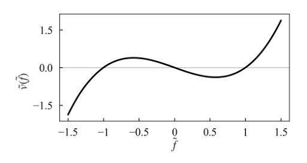
<figcaption class="paper-figure-caption"><b>Fig 1.</b> FIG. 1. Dimensionless force–velocity relation ˜v( ˜f) = ˜f 3 −˜f, corresponding to Eq. (2). The mobility is negative for 0 &lt; | ˜f| &lt; 1 and positive for | ˜f| &gt; 1, with drift reversal at ˜f = ±1.</figcaption>
</figure>
<figure class="paper-figure-card">
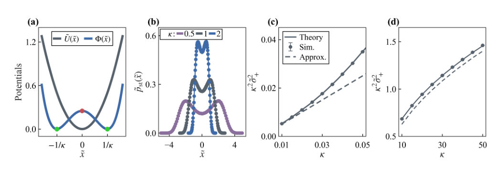
<figcaption class="paper-figure-caption"><b>Fig 2.</b> FIG. 2. Stationary localization in a harmonic trap. (a) ˜U(˜x) and Φ(˜x) for κ = 1; green (red) points mark stable (unstable) fixed points of ˜B0. (b) Stationary densities for several κ. (c), (d) Normalized conditional variance κ2˜σ2 + at small (c) and large (d) κ, with the asymptotic predictions κ/2 [Eq. (5)] and 0.198√κ [Eq. (??)] (dashed). Lines are exact results and points are simulations.</figcaption>
</figure>
<figure class="paper-figure-card">
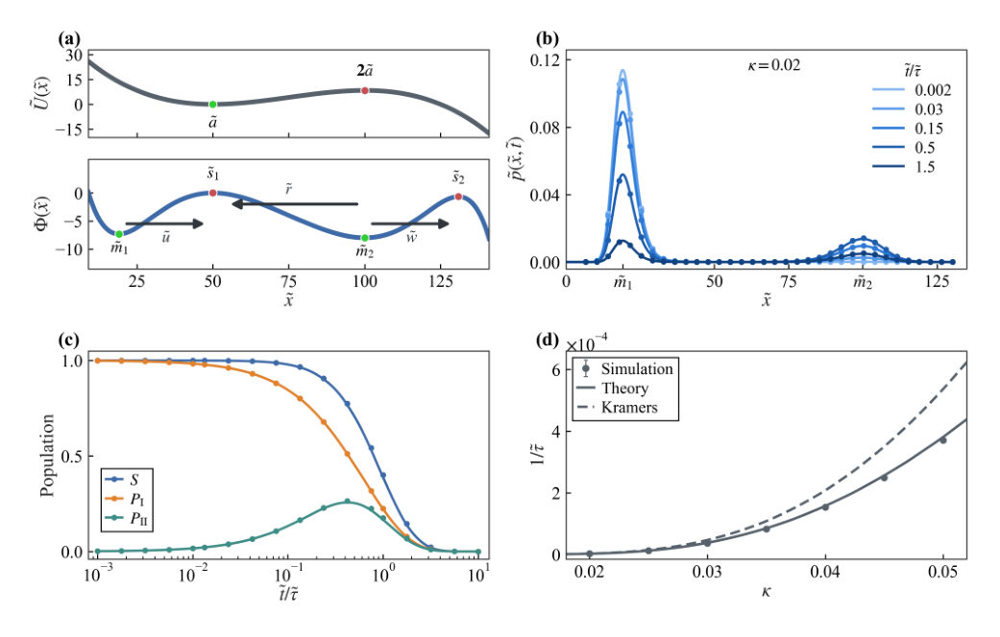
<figcaption class="paper-figure-caption"><b>Fig 3.</b> FIG. 3. First passage in the cubic trap, Eq. (6), at κ˜a = 1. (a) ˜U(˜x) (top) and Φ(˜x) (bottom) for κ = 0.02; green (red) points mark the mechanical minimum (maximum) in the top panel and stable (unstable) fixed points of ˜B0 in the bottom panel. Arrows indicate the rates ˜u, ˜r, and ˜w. (b) Density ˜p(˜x, ˜t) and (c) probability PI and PII that the particle is in the initial basin (˜x &lt; ˜s1) or the intermediate basin (˜s1 &lt; ˜x &lt; ˜s2), with survival probability S = PI + PII, for κ = 0.02. (d) Inverse MFPT versus κ, with the high-barrier (Kramers) approximation 1/(˜τ11 + ˜τ21 + ˜τ22) from Eq. (9) (dashed). Lines are Fokker–Planck results [Eq. (7) in (d)] and points are simulations.</figcaption>
</figure>
<figure class="paper-figure-card">
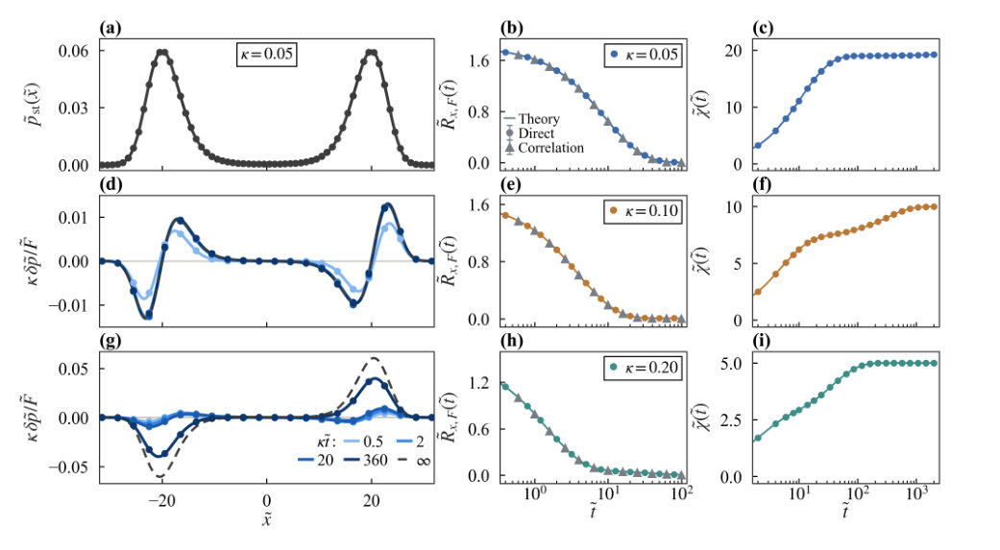
<figcaption class="paper-figure-caption"><b>Fig 4.</b> FIG. 4. Linear response to a uniform force ˜F = 0.005. (a) Stationary density ˜pst(˜x) at κ = 0.05. (d), (g) Linear density change κ δ˜p/ ˜F at the same κ for (d) the negative-mobility particle and (g) a passive unit-mobility particle in the same Φ, at the times κ˜t indicated in (g). Dashed lines mark the stationary limits; in (d), this limit coincides with the curves at κ˜t = 20 and 360. (b), (e), (h) Response kernel ˜Rx,F (˜t) and (c), (f), (i) step susceptibility ˜χ(˜t) of the negative-mobility particle for κ = 0.05, 0.10, and 0.20 (top to bottom). Lines are Fokker–Planck results [Eq. (18) in (b), (c), (e), (f), (h), (i)], and points are simulations. In (b), (e), and (h), circles are...</figcaption>
</figure>
</div>

<p><strong>Summary.</strong> This work explores the non-equilibrium statistical mechanics of particles with negative mobility in a potential well. The authors show that negative mobility destabilizes the potential minimum, leading to unusual bimodal localization and altering the escape dynamics. By analyzing the Fokker-Planck equation, they characterize the resulting stationary states and the system's response to external forces.</p>
<p><strong>Why it may be interesting.</strong> The study provides a concrete, non-equilibrium example of how modifying the particle's deterministic dynamics (mobility) can fundamentally change the statistical mechanics of confinement and escape, which has parallels in non-Markovian or non-equilibrium quantum dynamics.</p>
<details>
<summary>Detailed structure</summary>
<p><strong>Main problem.</strong> The paper investigates how introducing negative mobility fundamentally alters the stochastic behavior of particles moving in a mechanical potential landscape.</p>
<p><strong>Main result.</strong> Negative mobility causes the mechanical potential minimum to become unstable, leading to bimodal localization and transforming conventional activated escape into a two-stage process.</p>
<p><strong>Method.</strong> The analysis relies on solving the Fokker-Planck equation under the zero-current condition to find the stationary distribution, and using spectral expansion techniques to analyze relaxation dynamics.</p>
<p><strong>Model / system.</strong> The system is a one-dimensional overdamped particle subject to additive noise, governed by a Langevin equation with a force-velocity relation that exhibits negative mobility in a specific force range.</p>
<p><strong>Key observables.</strong> Stationary density ($  ilde{p}<em>{st}$), conditional variance ($ ilde{\sigma}^2</em>+$), Mean First-Passage Time ($ ilde{   au}$), and response functions ($  ilde{\chi}(t)$).</p>
<p><strong>Important parameters / regimes.</strong> The stiffness parameter $\kappa$ of the harmonic potential, and the noise strength $D$.</p>
<p><strong>Assumptions / limitations.</strong> The model is phenomenological, neglecting microscopic mechanisms, and assumes a spatially and force-independent diffusion coefficient $D$.</p>
<p><strong>Figures summary.</strong> Figures illustrate the force-velocity relation showing negative mobility, the resulting bimodal stationary distribution in a harmonic trap, and the effective drift potential $\Phi(x)$.</p>
<p><strong>Paper structure.</strong> The paper progresses from establishing the governing equations and the effect of negative mobility on confinement (stability reversal) to analyzing the resulting stationary moments and finally examining the altered activated escape and linear response dynamics.</p>
</details>
<details>
<summary>Abstract</summary>
<p>Understanding the fluctuations and response of particles in potential landscapes is a fundamental problem in nonequilibrium statistical physics. Here, we investigate how negative mobility reshapes the stochastic behavior of a particle moving in a mechanical potential landscape. We consider a one-dimensional overdamped particle subject to additive noise, with mobility that is negative at weak forces and positive at strong forces. In a potential well, negative mobility destabilizes the mechanical potential minimum and produces bimodal localization at two off-center positions. The same stability reversal transforms conventional Kramers escape from a potential well into a two-stage escape process involving an intermediate metastable state. When an additional spatially uniform force is applied, the mechanical perturbation translates rather than tilts the effective double well, yielding a positive response dominated at weak noise by intrawell relaxation, even though slow interwell switching dominates spontaneous positional fluctuations. These findings reveal how negative mobility reshapes the interplay among mechanical landscapes, stochastic stability, and response.</p>
</details>
<p><sub><a href="#top">↑ back to top</a></sub></p>

<p><a id="paper-2610.37352"></a></p>
<h3 id="coulomb-crystallization-in-free-electron-beams"><a href="http://arxiv.org/abs/2610.37352v1">Coulomb Crystallization in Free Electron Beams</a></h3>
<p><strong>Authors:</strong> Valerio Di Giulio, Rudolf Haindl, Armin Feist, Claus Ropers<br>
<strong>Type:</strong> both · <strong>Category:</strong> strongly correlated electrons · <strong>PDF:</strong> <a href="https://arxiv.org/pdf/2610.37352v1">https://arxiv.org/pdf/2610.37352v1</a><br>
<strong>Analysis basis:</strong> full PDF text, analyzed in chunks
<strong>Topic relevance:</strong> <code>Frenkel-Kontorova</code> <strong>1/5</strong> · <code>analog quantum simulation</code> <strong>1/5</strong> · <code>non-equilibrium universality</code> <strong>1/5</strong></p>
<div class="figure-strip-hint">↔ Scroll figures horizontally</div>
<div class="paper-figures-scroll">
<figure class="paper-figure-card">
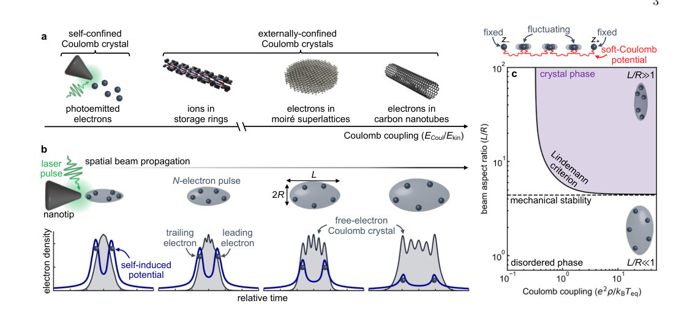
<figcaption class="paper-figure-caption"><b>Fig 1.</b> Figure 1. Formation of self-trapped Coulomb crystals. (a) Overview of selected systems in which Coulomb crystals have been observed, shown as a function of the Coulomb coupling, i.e., the ratio between Coulomb energy ECoul and kinetic energy Ekin. These include externally trapped classical systems, such as ions in storage rings [3–6], and quantum Coulomb crystals (Wigner crystals), such as electrons in carbon nanotubes [11, 50] and moir´e superlattices in two-dimensional heterostructures [13]. As demonstrated in this work, N-electron beams (Ne-beams) photoemitted from a metallic nanotip in an electron microscope can also crystallize under their self-induced potential. (b) During...</figcaption>
</figure>
<figure class="paper-figure-card">
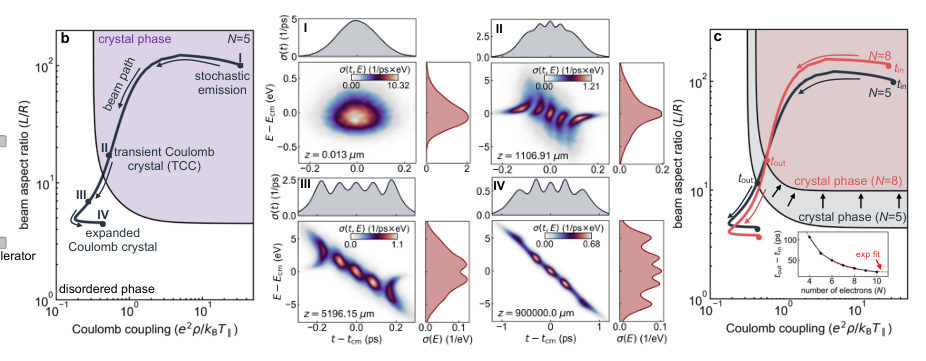
<figcaption class="paper-figure-caption"><b>Fig 2.</b> Figure 2. Coulomb crystal formation in a pulsed electron beam. (a) A laser pulse generates an N-electron pulse near a nanotip. The pulse evolves under the influence of accelerating fields provided by the extractor, held at 2 kV, and the accelerator, at 200 kV, located at distances of 500 µm and 0.9 m from the tip, respectively. (b) Evolution of the properties of an Ne-beam with N = 5 during propagation along the column against the phase diagram that determines the conditions for crystallization. We plot the aspect ratio AR = L/R and the longitudinal Coulomb coupling parameter Γ∥= e2ρ/kBT∥, computed using the longitudinal beam temperature kBT∥= me⟨(vz −vcm)2⟩z and the average linear density...</figcaption>
</figure>
<figure class="paper-figure-card">
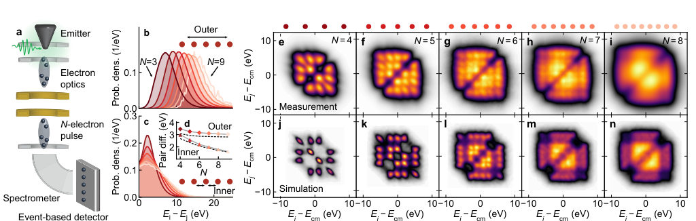
<figcaption class="paper-figure-caption"><b>Fig 3.</b> Figure 3. Experimental observation of TCC by recorded energy-energy correlations in a transmission electron microscope. (a) Experimental setup. N-electron pulses are generated by near-threshold femtosecond photoemission from a Schottky field emitter, accelerated to 200 keV in the transmission electron microscope, energy-dispersed and detected by an event-driven camera, yielding N and {E1, . . . , EN} for each pulse. (b,c) Experimental histograms of the energy difference between the two outermost electrons (b) and all pairs of inner electrons (c) of the energy-sorted pulse, for N = 3–9 (dark to light). The outermost pair remains well separated, with a separation growing monotonically with N,...</figcaption>
</figure>
<figure class="paper-figure-card">
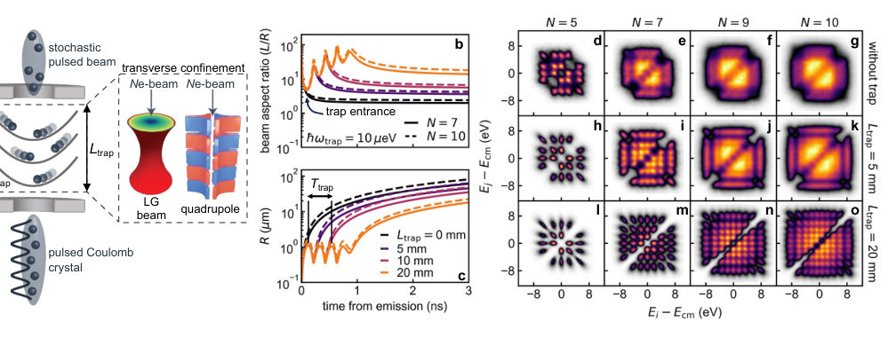
<figcaption class="paper-figure-caption"><b>Fig 4.</b> Figure 4. Trapping of N-electron pulses (a) A photoemitted electron pulse composed of N electrons is accelerated by the extractor and then injected into a harmonic transverse trap with trapping frequency ℏωtrap, realized either by sending the beam through a Laguerre-Gauss LG01 (see inset) mode via ponderomotive forces or by a series of static quadrupoles with alternating polarity. After the trapping stage of length Ltrap, a pulsed Coulomb crystal beam is formed thanks to the one- dimensional confinement provided by the trap, and is then brought to Ek = 200 keV by the accelerator. (b,c) Beam aspect ratio (b) and average transverse electron-electron distance (c) as a function of time elapsed...</figcaption>
</figure>
<figure class="paper-figure-card">
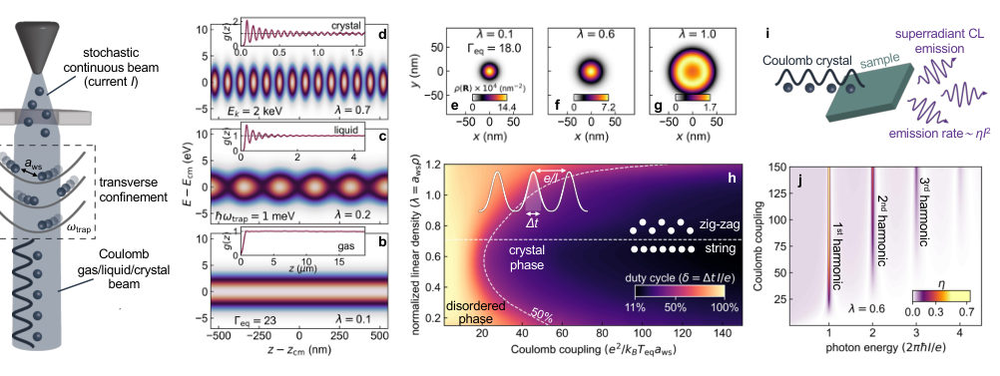
<figcaption class="paper-figure-caption"><b>Fig 5.</b> Figure 5. Crystallization of a continuous electron beam. (a) A continuous source produces an electron current I, which is accelerated by the extractor and injected into a transverse trap with frequency ℏωtrap, similarly to Fig. 4a, but with a trap length sufficient for thermalization. The thermalized beam exits in a gas, liquid, or crystal phase depending on the Coulomb coupling Γeq, with the Wigner-Seitz radius aws, and on the normalized linear density λ = awsI/evcm. (b-d) Longitudinal phase-space density at the trap exit for λ = 0.1 (b), 0.2 (c), and 0.7 (d), at fixed Γeq = 23. As λ decreases, the beam undergoes crystal-liquid and liquid-gas transitions, as shown by the density-density...</figcaption>
</figure>
</div>

<p><strong>Summary.</strong> This work demonstrates that electron beams can spontaneously form ordered Coulomb crystals in free space, driven by self-induced longitudinal potentials from the beam edges. By combining experiments with advanced 1D statistical models, the authors map out the conditions—including the role of weak transverse guiding—under which these strongly correlated, self-structured electron beams can be generated.</p>
<p><strong>Why it may be interesting.</strong> The concept of self-induced potential leading to structural ordering in a non-equilibrium, propagating beam is highly relevant to understanding collective behavior in quantum systems where external confinement is absent.</p>
<details>
<summary>Detailed structure</summary>
<p><strong>Main problem.</strong> The paper investigates the emergence of Coulomb crystallization in electron beams, specifically addressing how ordered phases can form in free space without external trapping fields.</p>
<p><strong>Main result.</strong> Transient crystallization can occur in free electron pulses due to a self-induced longitudinal potential generated by the leading and trailing electrons, and weak transverse guiding can sustain this ordering for larger particle numbers.</p>
<p><strong>Method.</strong> The study combines experimental measurements of energy correlations with theoretical modeling using quasi-one-dimensional statistical mechanics and many-body simulations.</p>
<p><strong>Model / system.</strong> The system involves photoemitted electron pulses or continuous beams propagating through a vacuum. The physics is modeled using a quasi-1D approach with a softened Coulomb potential, incorporating self-consistent trapping potentials.</p>
<p><strong>Key observables.</strong> Number-resolved energy correlations, mean-squared displacement ($\langle\delta z^2
angle$), and the phase diagram mapping ordering dynamics against beam geometry and energy ratios.</p>
<p><strong>Important parameters / regimes.</strong> Particle number ($N$), aspect ratio ($L/R$), and the ratio of mean Coulomb interaction energy to longitudinal thermal energy ($E_{	ext{Coul}}/E_{	ext{kin}}$).</p>
<p><strong>Assumptions / limitations.</strong> The 1D model assumes interactions are dominated by axial separations, and the self-trapping potential relies on the leading/trailing electrons providing confinement.</p>
<p><strong>Figures summary.</strong> Figures illustrate the comparison between trapped and free-space Coulomb crystals, showing the geometry of self-confinement and the evolution of order parameters across different beam regimes.</p>
<p><strong>Paper structure.</strong> The paper progresses from observing transient crystallization in pulsed beams (small N) to developing a 1D statistical model explaining self-confinement, and finally extending the framework to predict sustained ordering in continuous beams using weak transverse guiding.</p>
</details>
<details>
<summary>Abstract</summary>
<p>Classical Coulomb crystals and quantum Wigner crystals typically arise when repulsive interactions order like-charged particles in spatially confined environments. Here, we show that transient crystallization can also emerge in freely propagating electron pulses without external trapping. Experimentally, we use a transmission electron microscope to measure number-resolved energy correlations in photoemitted pulses containing up to nine electrons, revealing strong correlations at small particle numbers that progressively disappear in the pulse interior as the number increases. To explain these observations, we combine many-body simulations with a one-dimensional statistical-mechanical model, showing that the leading and trailing electrons generate a self-induced longitudinal potential that transiently confines the inner particles, enabling the formation of an ordered chain during propagation. The resulting crystallization phase diagram reveals how many-body ordering dynamics can be understood in terms of evolving macroscopic beam properties, namely its geometry and the ratio of the mean Coulomb interaction energy to the longitudinal thermal energy. Extending this framework, we theoretically demonstrate that weak transverse guiding through electrostatic or optical ponderomotive forces can sustain crystallization at larger particle numbers and predict spontaneous longitudinal periodic bunching in continuous electron beams. Our results identify conditions under which stochastic Coulomb interactions can be harnessed to generate self-structured, strongly correlated electron beams in both pulsed and continuous regimes.</p>
</details>
<p><sub><a href="#top">↑ back to top</a></sub></p>

<p><a id="paper-2610.36054"></a></p>
<h3 id="mesons-confinement-and-complexity-a-krylov-space-perspective-on-the-long-range-ising-chain"><a href="http://arxiv.org/abs/2610.36054v1">Mesons, Confinement, and Complexity: A Krylov Space Perspective on the Long-Range Ising Chain</a></h3>
<p><strong>Authors:</strong> Xuhao Jiang, Jad C. Halimeh, N. S. Srivatsa<br>
<strong>Type:</strong> theory · <strong>Category:</strong> other · <strong>PDF:</strong> <a href="https://arxiv.org/pdf/2610.36054v1">https://arxiv.org/pdf/2610.36054v1</a><br>
<strong>Analysis basis:</strong> full PDF text, analyzed in chunks
<strong>Topic relevance:</strong> <code>analog quantum simulation</code> <strong>1/5</strong> · <code>non-equilibrium universality</code> <strong>1/5</strong> · <code>scars &amp; prethermalization</code> <strong>1/5</strong></p>
<div class="figure-strip-hint">↔ Scroll figures horizontally</div>
<div class="paper-figures-scroll">
<figure class="paper-figure-card">
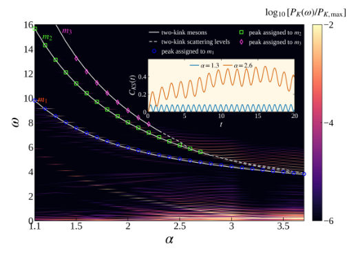
<figcaption class="paper-figure-caption"><b>Fig 1.</b> FIG. 1. Fourier spectrum of the Krylov state complexity CKS(t) and meson masses in the long-range Ising model. The background shows log10[PK(ω)/PK,max] for L = 16 and hx = 0.30, with PK(ω) defined in Eq. (3). The discrete Fourier transform is performed over 0 ≤t ≤2000 with a time step of ∆t = 0.05. White curves show the finite-size two-kink levels m1,2,3 [19], solid where the level is a meson and dashed where it is a discretized scattering state, while colored markers indicate the spectral peaks assigned to the mesons; the weakest m3 peaks lie below the color scale. The inset shows CKS(t) for two selected values of α.</figcaption>
</figure>
<figure class="paper-figure-card">
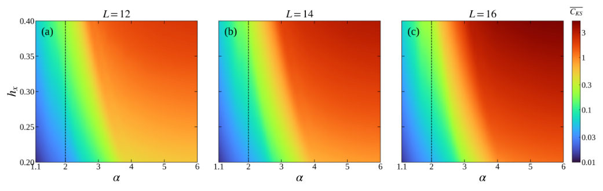
<figcaption class="paper-figure-caption"><b>Fig 2.</b> FIG. 2. Time-averaged Krylov state complexity CKS(α, hx) over the time window t ∈[0, 200] following a quench from a fully polarized initial state under the long-range Hamiltonian ˆH(α, hx) [Eq. (1)], shown on a logarithmic color scale for system sizes (a) L = 12, (b) L = 14, and (c) L = 16. The dashed line marks α = 2, the threshold beyond which the long-range confining potential is known to saturate at large domain-wall separation [10]. For α ≲2 the complexity is suppressed by up to two orders of magnitude and depends only weakly on system size L, whereas at large α it grows rapidly and increases with L.</figcaption>
</figure>
<figure class="paper-figure-card">
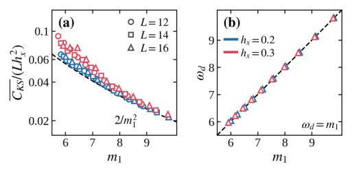
<figcaption class="paper-figure-caption"><b>Fig 3.</b> FIG. 3. (a) Time-averaged Krylov state complexity CKS, scaled by Lh2 x, versus the lightest meson mass m1 for L = 12, 14, and 16. The dashed line is the leading-order result 2/m2 1. (b) Dominant oscillation frequency ωd of CKS(t) versus m1 for L = 16. The dashed line marks ωd = m1. In both panels, 1.1 ≤α ≤2, hx = 0.2 and 0.3, and time averages are taken over the time window t ∈[0, 200].</figcaption>
</figure>
<figure class="paper-figure-card">
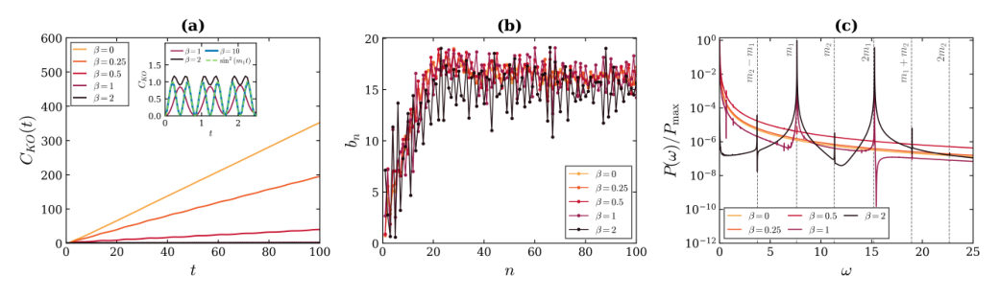
<figcaption class="paper-figure-caption"><b>Fig 4.</b> FIG. 4. Operator Krylov dynamics of the domain wall-number operator ˆODW in the long-range transverse-field Ising chain with L = 13, hx = 0.3, and α = 1.4, for a range of inverse temperatures β. The operator Krylov basis contains at most Kmax = 5000 basis operators; numerical details are given in the Supplemental Material [19]. (a) Operator Krylov complexity CKO(t). Its approximately linear growth slows as β increases. Inset: short-time view at large β, where CKO(t) oscillates and approaches the single-meson prediction sin2(m1t). (b) Lanczos coefficients bn versus iteration n. Their staggering becomes more pronounced as β increases, reflecting the gapped low-temperature spectral function....</figcaption>
</figure>
</div>

<p><strong>Summary.</strong> This work uses Krylov complexity as a novel diagnostic tool to study confinement in the long-range transverse-field Ising chain. By analyzing the time evolution of state and operator complexity, the authors successfully link the complexity's spectral features to the meson masses arising from the effective two-kink model. This confirms complexity as a robust probe for interaction-induced confinement in quantum many-body systems.</p>
<p><strong>Why it may be interesting.</strong> The use of complexity measures to diagnose fundamental physical phenomena like confinement and bound states provides a powerful, non-perturbative diagnostic tool applicable across different quantum many-body systems.</p>
<details>
<summary>Detailed structure</summary>
<p><strong>Main problem.</strong> The paper investigates how confinement, arising from long-range interactions in the transverse-field Ising chain, can be diagnosed using Krylov complexity measures.</p>
<p><strong>Main result.</strong> Krylov complexity serves as a spectroscopic probe, showing that its oscillations encode the meson spectrum in the confined regime ($\alpha < 2$).</p>
<p><strong>Method.</strong> The study employs Krylov state and operator complexity, calculated via the Lanczos algorithm, to analyze quantum dynamics after a quench or at finite temperature.</p>
<p><strong>Model / system.</strong> The model is a one-dimensional long-range transverse-field Ising chain with Hamiltonian $\hat{H}(\alpha, h_x) = -\sum_{i<j} J r^{\alpha}_{ij} \sigma^z_i \sigma^z_j - h_x \sum_{i=1}^L \sigma^x_i$. Confinement is induced by the power-law decay $\sim 1/r^\alpha$ without an explicit symmetry-breaking field.</p>
<p><strong>Key observables.</strong> Krylov State Complexity ($C_{KS}(t)$), Operator Krylov Complexity ($C_{KO}(t)$), and the meson masses derived from the power spectrum of $C_{KS}(t)$.</p>
<p><strong>Important parameters / regimes.</strong> The exponent $\alpha$ controls confinement ($\alpha < 2$ is strongly confined), the transverse field $h_x$, and the temperature $T$ (or inverse temperature $eta$).</p>
<p><strong>Assumptions / limitations.</strong> The analysis relies on mapping the dynamics onto the Krylov subspace and using the time-averaged complexity as a diagnostic tool.</p>
<p><strong>Figures summary.</strong> Figures illustrate the Fourier spectrum of $C_{KS}(t)$ showing peaks at meson masses, and show the dependence of $C_{KS}$ on $\alpha$ and $h_x$, highlighting the crossover between confined and deconfined regimes.</p>
<p><strong>Paper structure.</strong> The paper systematically analyzes the state complexity after a quench, linking its oscillations to meson masses. It then extends this to operator complexity at finite temperature, demonstrating how the spectral structure is preserved at low $T$ but washed out at high $T$.</p>
</details>
<details>
<summary>Abstract</summary>
<p>We investigate the interplay between confinement and Krylov complexity in the long-range transverse-field Ising chain, where power-law interactions $\sim 1/r^α$ generate an effective confining potential between domain walls without an explicit symmetry-breaking field. Using the time-averaged Krylov state complexity after a quench as a diagnostic, we find that the complexity is strongly suppressed and only weakly system size-dependent at small $α$ and small transverse field $h_x$, where confinement is strongest, and crosses over to rapid growth at larger $α$, where it increases with system size. Within the confined regime, the oscillation frequencies of the complexity agree with the meson masses of an effective two-kink model, with the dominant frequency growing linearly with the lightest meson mass and the time-averaged complexity decreasing approximately as its inverse square. We further study operator Krylov complexity at finite temperature using the Wightman inner product. At low temperature, it exhibits bounded oscillations that directly encode the meson spectrum, whereas this structure is progressively washed out as the temperature increases. These results identify Krylov complexity as a spectroscopic probe of interaction-induced confinement and reproduce, in a microscopic lattice model, the hallmarks of Krylov complexity identified in confining field theories.</p>
</details>
<p><sub><a href="#top">↑ back to top</a></sub></p>

<p><a id="paper-2610.36318"></a></p>
<h3 id="ratchet-effects-for-swarmalators-on-asymmetric-substrates"><a href="http://arxiv.org/abs/2610.36318v1">Ratchet Effects for Swarmalators on Asymmetric Substrates</a></h3>
<p><strong>Authors:</strong> B. Albert, A. Libal, C. J. O. Reichhardt, C. Reichhardt<br>
<strong>Type:</strong> theory · <strong>Category:</strong> statistical mechanics · <strong>PDF:</strong> <a href="https://arxiv.org/pdf/2610.36318v1">https://arxiv.org/pdf/2610.36318v1</a><br>
<strong>Analysis basis:</strong> full PDF text, analyzed in chunks
<strong>Topic relevance:</strong> <code>Frenkel-Kontorova</code> <strong>1/5</strong> · <code>driven-dissipative phase transition</code> <strong>1/5</strong> · <code>non-equilibrium universality</code> <strong>1/5</strong></p>
<div class="figure-strip-hint">↔ Scroll figures horizontally</div>
<div class="paper-figures-scroll">
<figure class="paper-figure-card">
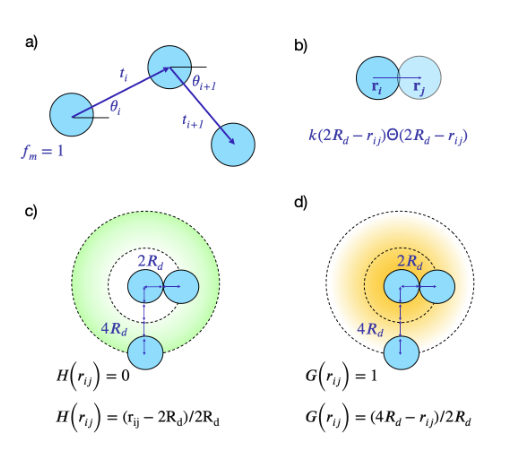
<figcaption class="paper-figure-caption"><b>Fig 1.</b> FIG. 1. Schematics of the active disk swarmalator system. (a) The basic active disk model showing a disk with a mo- tor force fm traveling at angle θi and undergoing a tumble to a new angle θi+1 after a run time of ti. (b) The re- pulsive disk-disk interaction acts out to a distance Rd. (c) The additional swarmalator force, which acts over a distance rsw &lt; r &lt; 2rsw = 4Rd, is positive or negative depending on the sign of J and the internal phase difference of the two disks. (d) The dynamics of the swarmalator phase is determined by disks within a radius 2rsw = 4Rd, and can be aligning or anti- aligning depending on the sign of K.</figcaption>
</figure>
<figure class="paper-figure-card">
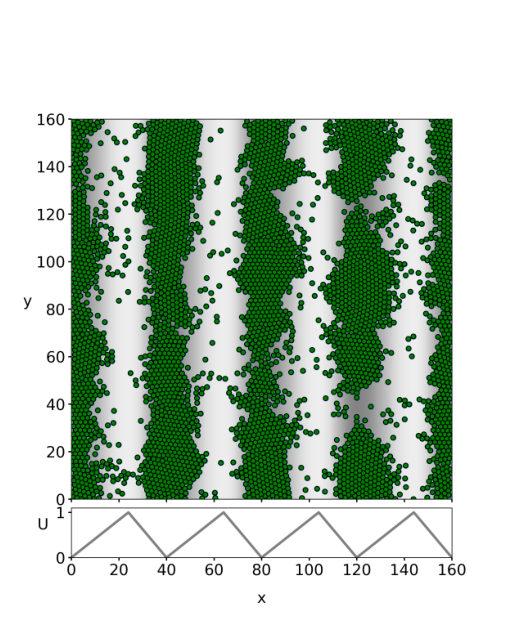
<figcaption class="paper-figure-caption"><b>Fig 2.</b> FIG. 2. Representative image of an asymmetric ratchet po- tential with rr = 0.6. Green circles are the particles in the non-swarmalator normal MIPS state with J = 0 and K = 0; the phase information is suppressed since J = 0. The gray shading indicates the depth of the sawtooth substrate po- tential. The lower panel shows a side view of the substrate ratchet potential U(x).</figcaption>
</figure>
<figure class="paper-figure-card">
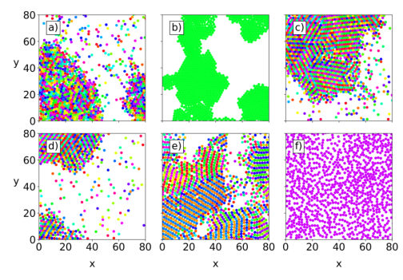
<figcaption class="paper-figure-caption"><b>Fig 3.</b> FIG. 3. Particle locations in the different states of the sys- tem that appear as J and K are varied in a system with no substrate potential for a density of ρ = 0.5, a run time of τ = 105, and a motor force of fm = 1.0. Color indicates the value of the phase ϕi for each particle, and we show only a quarter of the system for clarity. (a) Normal MIPS at J = 0.0 and K = 0.0. (b) The active gel at J = 1.0 and K = 1.0. (c) Superlattice MIPS for J = 1.0 and K = −0.1. (d) Frustrated cluster fluid at J = 1.5 and K = −0.1. (e) Frustrated MIPS state with J = −1.5 and K = −0.1. (f) Labyrinth state at J = −1.0 and K = 0.1.</figcaption>
</figure>
<figure class="paper-figure-card">
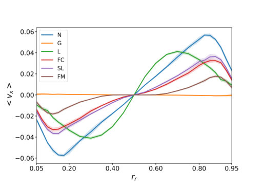
<figcaption class="paper-figure-caption"><b>Fig 4.</b> FIG. 4. ⟨Vx⟩vs the rising fraction rr for a system with ar = 40.0, f max r = 1.0, and fm = 1.0 for the normal MIPS with J = 0 and K = 0 (N, blue), active gel with J = 1.0 and K = 1.0 (G, orange), labyrinth with J = −1.0 and K = 0.1 (L, green), frustrated cluster fluid with J = 1.5 and K = −0.1 (FC, red), superlattice MIPS with J = 1.0 and K = −0.1 (SL, maroon), and frustrated MIPS with J = −1.5 and K = −0.1 (FM, brown). At rr = 0.5 the substrate is symmetric and there is no ratchet effect. For rr &gt; 0.5 the easy flow direction is along +x and for rr &lt; 0.5 the easy flow direction is along −x.</figcaption>
</figure>
<figure class="paper-figure-card">
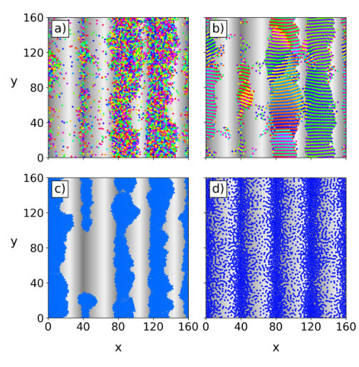
<figcaption class="paper-figure-caption"><b>Fig 5.</b> FIG. 5. Snapshots of the particle positions for the system in Fig. 4 with ar = 40.0, f max r = 1.0, and fm = 1.0. Colors indicate the phase of each particle. (a) The normal MIPS state with J = 0 and K = 0 at rr = 0.8, close to the optimal ratchet effect. (b) The frustrated MIPS state with J = −1.5 and K = −0.1 at rr = 0.8, showing cluster formation. (c) The active gel state with J = 1.0 and K = 1.0 at rr = 0.8, where there is no ratchet effect. (d) The labyrinth state with J = −1.0 and K = 0.1 at rr = 0.6, which is close to the optimal rr for this state.</figcaption>
</figure>
</div>

<p><strong>Summary.</strong> This paper examines how particles with internal phase oscillators, called swarmalators, exhibit directed motion (ratcheting) when placed on an asymmetric substrate. The key finding is that the specific structural state the active matter settles into—such as a labyrinth or a gel—determines whether the ratchet effect is enhanced, suppressed, or even reversed. This highlights the crucial role of internal interactions in non-equilibrium transport.</p>
<p><strong>Why it may be interesting.</strong> The study bridges active matter physics (non-equilibrium statistical mechanics) with pattern formation, showing how internal degrees of freedom can generate complex, directed transport phenomena that are highly sensitive to boundary conditions and local structure.</p>
<details>
<summary>Detailed structure</summary>
<p><strong>Main problem.</strong> The study investigates how the presence of internal phase dynamics (swarmalator interactions) modifies the directed transport (ratchet effect) of active matter particles moving over an asymmetric substrate.</p>
<p><strong>Main result.</strong> Swarmalator interactions significantly modulate the ratchet efficiency, with the labyrinth state showing the strongest effect over a wide parameter range, while the gel state's efficiency depends strongly on motor force.</p>
<p><strong>Method.</strong> The analysis uses continuum models and simulations based on the Adorjáni model, incorporating motor forces, steric repulsion, phase-dependent swarmalator forces, and an asymmetric substrate potential.</p>
<p><strong>Model / system.</strong> The system consists of active disks (swarmalators) whose dynamics are governed by motor forces, short-range repulsion, and internal phase interactions ($\phi_i$). These particles move on a substrate featuring a sawtooth ratchet potential.</p>
<p><strong>Key observables.</strong> Average directed velocity ($\langle V_x 
angle$), ratchet efficiency, and the identification of steady-state structural phases (e.g., active gel, labyrinth, MIPS).</p>
<p><strong>Important parameters / regimes.</strong> Substrate strength, substrate lattice spacing, motor force magnitude, and the coupling constants ($J$ and $K$) governing swarmalator interactions.</p>
<p><strong>Assumptions / limitations.</strong> The model assumes overdamped dynamics and uses a finite interaction length for the swarmalator rules, deviating from the original model.</p>
<p><strong>Figures summary.</strong> Figures illustrate the basic active disk model, the dependence of swarmalator forces on distance, phase evolution, and comparisons of ratchet efficiency across different structural states (MIPS, gel, labyrinth).</p>
<p><strong>Paper structure.</strong> The paper introduces the Adorjáni model, details the incorporation of swarmalator forces and asymmetric substrates, and then systematically analyzes how the resulting active cluster states dictate the magnitude and nature of the directed ratchet motion.</p>
</details>
<details>
<summary>Abstract</summary>
<p>Swarmalators are particles which have internal degrees of freedom in the form of phase oscillators that can synchronize and change the dynamics of the particles. We explore the active matter disk swarmalator model proposed by Adorjáni [Phys. Rev. E 109, 024607 (2024)] where there is an additional attraction or repulsion determined by whether the phases of particles within a certain radius synchronize or anti-synchronize. This model in the absence of swarmalator rules forms a motility-induced phase-separated (MIPS) state at high activity, but when the swarmalator rules are present, a number of additional states appear including an active gel, labyrinth state, frustrated MIPS, and frustrated fluid states. Here we examine ratchet effects for the Adorjáni model coupled to asymmetric substrates. We find that swarmalator interactions can strongly enhance or suppress active matter ratcheting depending on the structural state of the system, and show that the ratchet efficiency depends on the substrate strength, substrate lattice spacing, and the motor force on the particles. The gel state exhibits the weakest ratcheting for small substrate spacing and can even produce a reversed ratchet motion, but shows the strongest ratcheting for large motor forces. The labyrinth state exhibits the strongest ratcheting over a wide range of parameters since the quasi-one-dimensional labyrinth morphology can match the substrate geometry well.</p>
</details>
<p><sub><a href="#top">↑ back to top</a></sub></p>

<p><a id="paper-2610.37630"></a></p>
<h3 id="approximate-counting-for-mixed-math579math-spin-glasses-in-weak-external-fields-via-cluster-expansion"><a href="http://arxiv.org/abs/2610.37630v1">Approximate Counting for Mixed $p$-Spin Glasses in Weak External Fields via Cluster Expansion</a></h3>
<p><strong>Authors:</strong> Qiang Wu<br>
<strong>Type:</strong> theory · <strong>Category:</strong> disordered systems and neural networks · <strong>PDF:</strong> <a href="https://arxiv.org/pdf/2610.37630v1">https://arxiv.org/pdf/2610.37630v1</a><br>
<strong>Analysis basis:</strong> full PDF text, analyzed in chunks
<strong>Topic relevance:</strong> <code>Keldysh / 2PI / non-Gaussian methods</code> <strong>1/5</strong> · <code>analog quantum simulation</code> <strong>1/5</strong></p>
<div class="figure-strip-hint">↔ Scroll figures horizontally</div>
<div class="paper-figures-scroll">
<figure class="paper-figure-card">
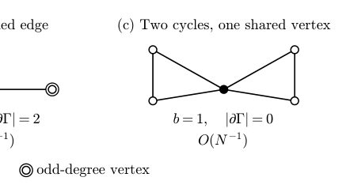
<figcaption class="paper-figure-caption"><b>Fig 1.</b> Figure 1. Branching and second-moment decay. Here b = | Br(Γ)|. Each bound concerns the sum of expected squared weights over all labeled copies of the displayed shape, under |h| ⩽ρ0N−1/4. Attaching the separate edge to the triangle removes one free vertex label without changing the two odd-degree vertices, whose squared external field factor is bh4 = O(N−1). Two triangles sharing one vertex have one more edge than vertices and also give O(N−1).</figcaption>
</figure>
<figure class="paper-figure-card">
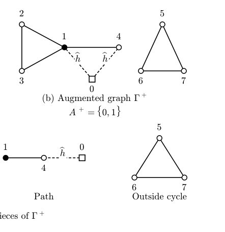
<figcaption class="paper-figure-caption"><b>Fig 2.</b> Figure 2. Augmentation and the edge partition in Lemma 4.3. In (a), the branching set is A = {1} and the odd-degree set is ∂Γ = {1, 4}, marked by rings. In (b), two dashed edges to the auxiliary vertex 0 supply the factor bh2. Row (c) contains exactly the same edges, separated into four pieces. Repeated labels 0 and 1 denote the same vertices of A+, not new vertices. The outside vertex sets are disjoint. Only solid, original edges count toward L.</figcaption>
</figure>
<figure class="paper-figure-card">
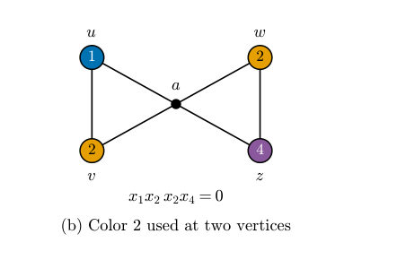
<figcaption class="paper-figure-caption"><b>Fig 3.</b> Figure 3. The color test when combining two cycle pieces. Both cases show the same graph, with A = {a} and L ⩾6. Vertex names are outside the circles, and the numbers inside are their colors. The isolated auxiliary vertex 0 is omitted. In (a), all four outside colors are distinct, so the two cycles can be combined. In (b), the distinct vertices v and w both have color 2. Each cycle is colorful by itself, but their product contains x2 2 and is discarded. The graph itself is valid. Section 4.4 corrects this coloring restriction by reweighting and averaging.</figcaption>
</figure>
</div>

<p><strong>Summary.</strong> This paper presents advanced algorithms to approximate the partition function of mixed $p$-spin glass models, including the SK model, in weak external fields. It achieves logarithmic accuracy using sophisticated techniques like cluster expansions and reverse hypercontractivity. The work provides polynomial-time complexity guarantees for this difficult counting problem in statistical physics.</p>
<p><strong>Why it may be interesting.</strong> The rigorous mathematical techniques developed for approximating partition functions in complex, disordered systems are highly relevant to understanding the phase transitions and ground states of quantum spin models, which often map onto spin glass physics.</p>
<details>
<summary>Detailed structure</summary>
<p><strong>Main problem.</strong> The paper develops algorithms to approximate the partition function of mixed $p$-spin glass models, including the Sherrington-Kirkpatrick (SK) model, in the presence of weak external fields.</p>
<p><strong>Main result.</strong> The authors provide algorithms that can approximate $\log Z_N$ to an additive error $\epsilon$ with a failure probability bounded by $\delta + 	au_N$, achieving this with a cost polynomial in $N$, $\epsilon^{-1}$, and $\delta^{-1}$.</p>
<p><strong>Method.</strong> The core method involves using cluster expansions, building upon techniques from Aizenman–Lebowitz–Ruelle, and employing advanced tools like randomized color coding and reverse hypercontractivity to control error terms.</p>
<p><strong>Model / system.</strong> The system studied is the mixed $p$-spin glass model, characterized by a Hamiltonian involving interactions of order $p \ge 3$. The analysis is performed for the SK model and generalized to mixed $p$-spin interactions.</p>
<p><strong>Key observables.</strong> The primary observable is the partition function, $Z_N$, and its logarithm, $\log Z_N$. The approximation targets $\log b_{ZN}$, where $b_{ZN}$ is a normalized version of $Z_N$.</p>
<p><strong>Important parameters / regimes.</strong> The analysis is valid in the weak external field regime $|h| \le 
ho_0 N^{-1/4}$ and below the second-moment threshold $eta_f$. The complexity depends on the desired accuracy $\epsilon$ and failure probability $\delta$.</p>
<p><strong>Assumptions / limitations.</strong> The derivation relies on the existence of finite moments (e.g., finite fourth moment for the disorder) and the successful application of reverse hypercontractivity to convert mean-square error bounds into logarithmic accuracy.</p>
<p><strong>Paper structure.</strong> The paper systematically develops the approximation by first establishing bounds using cluster expansions, then refining the error control using techniques like inclusion-exclusion and color coding for specific models (SK), and finally deriving the main algorithmic result with explicit complexity bounds.</p>
</details>
<details>
<summary>Abstract</summary>
<p>We give algorithms for approximating the partition function $Z_N$ of the Sherrington--Kirkpatrick (SK) model and finite mixed Ising $p$-spin models with $p\ge 3$. The algorithms apply at a fixed margin below the second-moment threshold $β_{\mathrm f}$ with homogeneous weak external fields $|h|\leqρ_0N^{-1/4}$, for fixed $ρ_0>0$. For any accuracy $\varepsilon\in(0,1)$ and failure parameter $δ\in(0,1)$, they approximate $\log Z_N$ to additive error $\varepsilon$. The number of exact operations is polynomial jointly in $N$, $\varepsilon^{-1}$, and $δ^{-1}$. The disorder variables have i.i.d symmetric distribution with unit variance. The failure probability is at most $δ$ plus an explicit disorder tail bound. This tail bound tends to zero under a finite fourth moment condition. Our approach builds on the cluster expansions of Aizenman--Lebowitz--Ruelle~\cite{ALR87} and Dey--Wu~\cites{DW23,DW26}. For higher-order mixtures, we retain hypergraphs using few vertices and evaluate their total weight deterministically through local spin averages and inclusion--exclusion. For SK, we impose cutoffs on the number of vertices of degree at least three and on the total number of edges. We estimate the retained sum using randomized color coding~\cite{AYZ95}. A lower tail control based on reverse hypercontractivity~\cite{MOS13} converts the mean-square approximation of the normalized partition function into logarithmic accuracy.</p>
</details>
<p><sub><a href="#top">↑ back to top</a></sub></p>

<p><a id="paper-2610.36518"></a></p>
<h3 id="detailed-balance-and-phase-transition-in-nash-equilibria-of-mean-field-ising-game"><a href="http://arxiv.org/abs/2610.36518v1">Detailed balance and phase transition in Nash equilibria of mean-field Ising game</a></h3>
<p><strong>Authors:</strong> Ken Hiura, Hajime Koike, Kiyoshi Kanazawa<br>
<strong>Type:</strong> theory · <strong>Category:</strong> statistical mechanics · <strong>PDF:</strong> <a href="https://arxiv.org/pdf/2610.36518v1">https://arxiv.org/pdf/2610.36518v1</a><br>
<strong>Analysis basis:</strong> full PDF text, analyzed in chunks
<strong>Topic relevance:</strong> <code>driven-dissipative phase transition</code> <strong>1/5</strong> · <code>non-equilibrium universality</code> <strong>1/5</strong></p>
<div class="figure-strip-hint">↔ Scroll figures horizontally</div>
<div class="paper-figures-scroll">
<figure class="paper-figure-card">
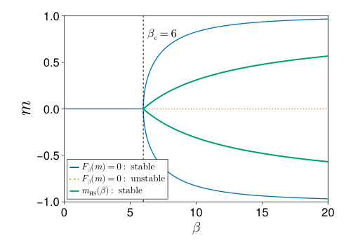
<figcaption class="paper-figure-caption"><b>Fig 1.</b> FIG. 1. Stationary magnetization as a function of β with r = J = 1. Blue solid branches denote linearly stable so- lutions of Fβ(m) = 0, while yellow dashed branches denote unstable solutions. The disordered equilibrium loses stability at βc = 6, where the ordered branches bifurcate continuously. Green solid curves show the linearly stable stationary solu- tions ±mHS(β) of the model in [18] with reference jump rate σ2 = 1.</figcaption>
</figure>
</div>

<p><strong>Summary.</strong> This paper analyzes a mean-field Ising game incorporating an entropic control cost to study its equilibrium states. It demonstrates that the stationary Nash equilibria obey detailed balance and undergo a second-order phase transition characteristic of the mean-field Ising model. The work provides detailed critical dynamics, including critical slowing down, for both stationary and non-stationary regimes.</p>
<p><strong>Why it may be interesting.</strong> The connection between game theory (Nash equilibria) and statistical physics concepts like detailed balance and phase transitions provides a powerful, non-standard framework for understanding emergent collective behavior in complex systems.</p>
<details>
<summary>Detailed structure</summary>
<p><strong>Main problem.</strong> The study investigates the detailed balance and phase transition behavior within the Nash equilibria of a mean-field Ising game incorporating an entropic control cost.</p>
<p><strong>Main result.</strong> The stationary Nash equilibria satisfy detailed balance and exhibit a second-order phase transition from disordered to ordered states as temperature decreases. Critical dynamics are characterized by mean-field Ising scaling exponents.</p>
<p><strong>Method.</strong> The analysis uses the large population limit to derive a Mean-Field Game (MFG) system, followed by bifurcation analysis and center-manifold reduction to study non-stationary dynamics near criticality.</p>
<p><strong>Model / system.</strong> The model is a finite-state mean-field game based on the Ising model, where players minimize a cost function combining ferromagnetic interaction energy and an entropic control cost. The system is analyzed in the thermodynamic limit (large population N).</p>
<p><strong>Key observables.</strong> Magnetization ($m$), difference in value function ($\Delta$), and relaxation time ($    au$).</p>
<p><strong>Important parameters / regimes.</strong> Inverse temperature ($eta$), critical inverse temperature ($eta_c$), and interaction strength ($J$).</p>
<p><strong>Assumptions / limitations.</strong> The analysis relies on the mean-field approximation ($N 	o \infty$) and the use of the instantaneous relative entropy rate as the control cost.</p>
<p><strong>Figures summary.</strong> Figure 1 illustrates the bifurcation diagram for the stationary magnetization $m$ versus $eta$, showing the pitchfork bifurcation at $eta_c = 6$ for the case $r=J=1$.</p>
<p><strong>Paper structure.</strong> The paper first derives the MFG system in the large N limit, establishing the self-consistency equation for stationary states. It then performs a bifurcation analysis to locate the critical point $eta_c$, followed by a detailed non-stationary analysis using center-manifold reduction to characterize critical slowing down.</p>
</details>
<details>
<summary>Abstract</summary>
<p>We study a finite-state mean-field game with entropic control cost. In the large population limit, we show that its stationary Nash equilibria satisfy the detailed balance condition and their distributions take the Gibbsian form with the value function playing the role of a Hamiltonian. We apply the entropic control cost to a ferromagnetic mean-field Ising game and investigate its stationary and non-stationary Nash equilibria. We find that the stationary Nash equilibria exhibit a second-order phase transition from disordered to ordered equilibria as temperature decreases. A center-manifold reduction yields non-stationary Nash equilibrium near the critical temperature and reveals the critical slowing down in the relaxation toward the stationary Nash equilibrium.</p>
</details>
<p><sub><a href="#top">↑ back to top</a></sub></p>

<p><a id="paper-2610.36404"></a></p>
<h3 id="hierarchical-connectivity-sets-the-upper-critical-dimension-of-neural-avalanches"><a href="http://arxiv.org/abs/2610.36404v1">Hierarchical connectivity sets the upper critical dimension of neural avalanches</a></h3>
<p><strong>Authors:</strong> W. A. Zúñiga-Galindo<br>
<strong>Type:</strong> theory · <strong>Category:</strong> disordered systems and neural networks · <strong>PDF:</strong> <a href="https://arxiv.org/pdf/2610.36404v1">https://arxiv.org/pdf/2610.36404v1</a><br>
<strong>Analysis basis:</strong> full PDF text, analyzed in chunks
<strong>Topic relevance:</strong> <code>Keldysh / 2PI / non-Gaussian methods</code> <strong>1/5</strong> · <code>non-equilibrium universality</code> <strong>1/5</strong></p>
<div class="figure-strip-hint">↔ Scroll figures horizontally</div>
<div class="paper-figures-scroll">
<figure class="paper-figure-card">
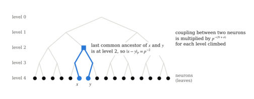
<figcaption class="paper-figure-caption"><b>Fig 1.</b> FIG. 1. Neurons organized in a tree-like structure (p = 2, depth 4: levels 0, . . . , 4). The p-adic distance between two neurons is determined by the level of their last common an- cestor. With a kernel w(∥x∥p) ∝∥x∥−N−σ p , the exponent σ measures how fast coupling decays with hierarchical distance.</figcaption>
</figure>
<figure class="paper-figure-card">

<figcaption class="paper-figure-caption"><b>Fig 2.</b> FIG. 2. Connection matrices wij of two networks of 64 neurons with σ = 1 (logarithmic color scale; diagonal excluded; total coupling per neuron normalized to 1). (a) Hierarchical network, p = 2, N = 1, l = 6, wij ∝|i −j|−(1+σ) 2 . Neurons are ordered along the boundary of the tree; the nested blocks are the modules of levels 5, 4, . . . , 1, and w is constant on each block. (b) Euclidean ring with wij ∝|i −j|−(1+σ).</figcaption>
</figure>
<figure class="paper-figure-card">
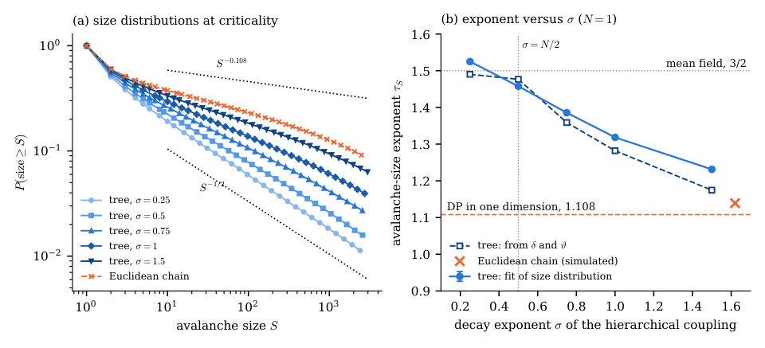
<figcaption class="paper-figure-caption"><b>Fig 3.</b> FIG. 3. Avalanches at the critical point. (a) Probability that an avalanche has size at least S, for the hierarchical network (p = 2, N = 1, l = 40) with five values of σ, and for a Euclidean chain with nearest-neighbor coupling. Dotted lines: the mean-field law S−1/2 (τS = 3/2) and the DP law S−0.108 in one dimension. (b) τS against σ. Filled circles: maximum-likelihood fit of the size distribution (10 ≤S ≤2000). Open squares: τS = 1 + δ/(1 + ϑ + δ) from the measured survival and growth exponents. The vertical line marks σ = N/2, where N = Nc.</figcaption>
</figure>
</div>

<p><strong>Summary.</strong> This paper investigates neural avalanches on networks with hierarchical connectivity modeled using $p$-adic mathematics. It shows that this structure bypasses dimensional constraints typically found in mean-field theories, establishing a new upper critical dimension $N_c=2\sigma$. The work provides a theoretical framework for understanding how connectivity decay dictates the critical behavior of complex, non-equilibrium physical systems.</p>
<p><strong>Why it may be interesting.</strong> While focused on neural dynamics, the use of $p$-adic analysis and the study of critical phenomena in structured, non-Euclidean lattices provides mathematical tools relevant to analyzing complex, disordered quantum systems or quantum networks with inherent hierarchical structure.</p>
<details>
<summary>Detailed structure</summary>
<p><strong>Main problem.</strong> The paper addresses determining the upper critical dimension for neural avalanches when the underlying connectivity is hierarchical, contrasting with standard mean-field predictions.</p>
<p><strong>Main result.</strong> Hierarchical connectivity removes the constraint that $N \ge 4$ required for mean-field behavior, establishing the upper critical dimension as $N_c = 2\sigma$.</p>
<p><strong>Method.</strong> The analysis uses a $p$-adic formulation of the Buice--Cowan field theory, deriving the effective theory via the Taibleson–Vladimirov operator.</p>
<p><strong>Model / system.</strong> The model describes cortical activity propagating in neuronal avalanches, formulated on the $p$-adic numbers ($\mathbb{Q}_p$) which naturally impose a tree-like, ultrametric structure.</p>
<p><strong>Key observables.</strong> Avalanche size exponent ($ au_S$), Upper Critical Dimension ($N_c$), and critical exponents ($eta, 
u_\parallel, 
u_\perp, z$).</p>
<p><strong>Important parameters / regimes.</strong> The coupling decay rate $\sigma$, the dimension $N$, and the parameter $p$ defining the $p$-adic structure.</p>
<p><strong>Assumptions / limitations.</strong> The analysis relies on the $p$-adic structure ($\mathbb{Q}_p$) and assumes the validity of the Ginzburg criterion to assess mean-field breakdown.</p>
<p><strong>Figures summary.</strong> Figure 1 illustrates the tree-like structure in $p$-adic space, while Figure 2 compares connection matrices for hierarchical versus Euclidean networks, showing coupling decay dependence on $\sigma$.</p>
<p><strong>Paper structure.</strong> The paper progresses by setting up the generalized Doi–Peliti action on $\mathbb{Q}_p$, deriving the effective theory using the Taibleson–Vladimirov operator, establishing the critical dimension $N_c=2\sigma$, and finally comparing mean-field predictions against simulation results on the tree structure.</p>
</details>
<details>
<summary>Abstract</summary>
<p>Neural avalanches with size exponent $3/2$ are usually explained by mean-field critical branching, which for short-range coupling requires dimension $N\ge4$. We show that hierarchical connectivity removes this constraint. In a $p$-adic version of the Buice--Cowan field theory, a coupling that decays by $p^{-(N+σ)}$ per hierarchical level selects the Taibleson--Vladimirov operator, and the critical theory is ultrametric directed percolation with upper critical dimension $N_c=2σ$. Exact simulations on a tree give $τ_S=3/2$ for $σ\le N/2$, decreasing continuously for $σ>N/2$.</p>
</details>
<p><sub><a href="#top">↑ back to top</a></sub></p>

<p><a id="paper-2610.36710"></a></p>
<h3 id="intercomponent-vortex-interaction-and-dynamics-in-a-uniform-bose-quantum-liquid"><a href="http://arxiv.org/abs/2610.36710v1">Intercomponent vortex interaction and dynamics in a uniform Bose quantum liquid</a></h3>
<p><strong>Authors:</strong> Rabeea Kiran, Hiroki Saito, Hsiang-Hua Jen<br>
<strong>Type:</strong> theory · <strong>Category:</strong> quantum gases · <strong>PDF:</strong> <a href="https://arxiv.org/pdf/2610.36710v1">https://arxiv.org/pdf/2610.36710v1</a><br>
<strong>Analysis basis:</strong> full PDF text, analyzed in chunks
<strong>Topic relevance:</strong> <code>Keldysh / 2PI / non-Gaussian methods</code> <strong>1/5</strong> · <code>analog quantum simulation</code> <strong>1/5</strong></p>
<div class="figure-strip-hint">↔ Scroll figures horizontally</div>
<div class="paper-figures-scroll">
<figure class="paper-figure-card">
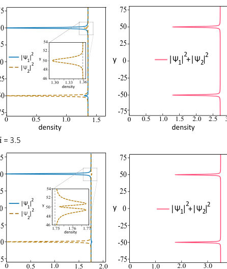
<figcaption class="paper-figure-caption"><b>Fig 1.</b> FIG. 1: Relaxed density profiles along x = 0 for vortices at (0, ±50), with β = 1. The left and right columns show the individual and total densities, respectively, for (a) ¯n = 0.612, (b) ¯n = 2.718, and (c) ¯n = 3.5. The insets in (b) and (c) enlarge the density of the non-winding component near the vortex core at (0, 50). The non-winding component remains nonzero at the vortex center and exhibits a transition from de- pletion to enhancement as the background density increases. Coordinates and densities are normalized by λ and nr, re- spectively.</figcaption>
</figure>
<figure class="paper-figure-card">
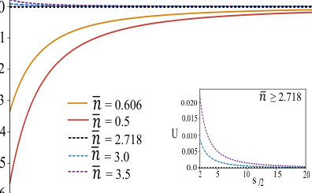
<figcaption class="paper-figure-caption"><b>Fig 2.</b> FIG. 2: Intervortex potential in Eq. (24) as a function of half separation s/2 for β = 1 and ξ = ξ−. The interaction is attractive for ¯n &lt; e, vanishes at ¯n = e, and becomes repulsive for ¯n &gt; e. The inset enlarges the positive branch of the potential.</figcaption>
</figure>
<figure class="paper-figure-card">
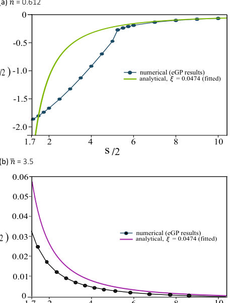
<figcaption class="paper-figure-caption"><b>Fig 3.</b> FIG. 3: Comparison between the asymptotic interaction po- tential U(sd/2) in Eq. (24) and numerical results obtained by pinned-core GP minimization for β = 1 and (a) ¯n = 0.612 with (b) ¯n = 3.5. The solid lines represent the analytical re- sult with ξ fitted to the numerical results in the asymptotic regime.</figcaption>
</figure>
<figure class="paper-figure-card">
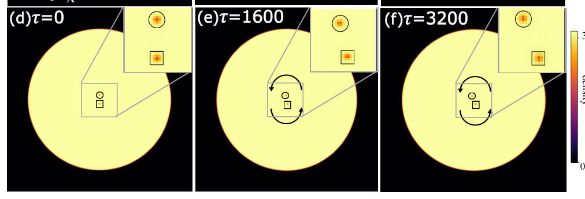
<figcaption class="paper-figure-caption"><b>Fig 4.</b> FIG. 4: Real-time density snapshots of (w1, 0) and (0, w2) vortices having same circulation (wj = 1) obtained by the extended GP eq. (3) with β = 1. (a–c) show clockwise motion for ¯n = 0.612 at τ = 0, 800, and 1600; panels (d–f) show counter-clockwise motion for ¯n = 3.5 at τ = 0, 1600, and 3200. Circle and square represent component 1 and 2, respectively, and the insets enlarge the central region. The initial spacing is set to be s = 15. See the Supplemental Material [39] for animations of the dynamics in (a)-(c) and (d)-(f). Other conditions are the same as those in Fig. 1.</figcaption>
</figure>
<figure class="paper-figure-card">
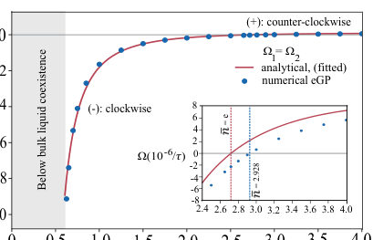
<figcaption class="paper-figure-caption"><b>Fig 5.</b> FIG. 5: Initial angular velocity versus total background den- sity ¯n with s ≃15 and β = 1. The line and dots represent the analytical cutoff fit and numerical extended GP results, respectively. Negative and positive values denote clockwise and counter-clockwise motion. The inset resolves the differ- ence between the analytical zero at ¯n = e and the numerical crossing labeled ¯n = 2.928.</figcaption>
</figure>
</div>

<p><strong>Summary.</strong> This paper analyzes the interaction between vortices in a binary Bose quantum liquid using extended Gross-Pitaevskii equations incorporating quantum fluctuations. The key finding is that the inter-vortex force changes from attractive to repulsive at a critical background density. This force reversal dictates a corresponding, observable reversal in the pair's orbital motion, providing insight into density-dependent topological dynamics.</p>
<p><strong>Why it may be interesting.</strong> This work provides a detailed, quantitative understanding of how quantum fluctuations and background density can fundamentally alter the long-range interaction forces between topological defects (vortices) in multicomponent quantum fluids, linking microscopic interactions to macroscopic dynamics.</p>
<details>
<summary>Detailed structure</summary>
<p><strong>Main problem.</strong> The study investigates the interaction and dynamics of vortices belonging to different components within a uniform binary quantum liquid.</p>
<p><strong>Main result.</strong> The asymptotic inter-vortex interaction potential exhibits a sign reversal from attractive to repulsive as the background density crosses a critical value. This force reversal is accompanied by a corresponding reversal of the vortex pair's orbital motion.</p>
<p><strong>Method.</strong> The analysis involves deriving the asymptotic interaction potential using coupled extended Gross-Pitaevskii equations augmented with logarithmic beyond-mean-field corrections, complemented by real-time simulations.</p>
<p><strong>Model / system.</strong> The system is a two-component Bose quantum liquid modeled by coupled extended Gross-Pitaevskii equations. The interactions include repulsive intracomponent and attractive intercomponent terms, and the analysis is performed in a 2D geometry.</p>
<p><strong>Key observables.</strong> Asymptotic inter-vortex interaction potential ($U(s/2)$), orbital motion (clockwise vs. counter-clockwise), and the sign of the interaction force.</p>
<p><strong>Important parameters / regimes.</strong> Background density ($ar{n}$), which controls the sign change at a critical density ($ar{n}_c = e^{2eta-1}$).</p>
<p><strong>Assumptions / limitations.</strong> The analysis relies on the mean-field approximation extended with Lee-Huang-Yang (LHY) quantum fluctuation corrections, and it considers the limit of well-separated vortices.</p>
<p><strong>Figures summary.</strong> Figures illustrate density profiles around isolated vortices and plot the inter-vortex potential $U(s/2)$ versus separation $s/2$, clearly showing the transition from attraction to repulsion.</p>
<p><strong>Paper structure.</strong> The paper progresses from setting up the coupled extended GP equations to deriving the asymptotic interaction potential, analyzing its density dependence, and finally demonstrating the resulting reversal of vortex orbital motion via simulations.</p>
</details>
<details>
<summary>Abstract</summary>
<p>We investigate the interaction and dynamics of vortices belonging to different components of a binary uniform quantum liquid. Using the coupled extended Gross-Pitaevskii equations with logarithmic beyond-mean-field corrections, we derive the asymptotic interaction potential between well-separated vortices. The interaction potential retains the asymptotic form $s^{-2}$ as a function of the intervortex distance s, but its coefficient depends on the background density through the quantum fluctuation. As a result, the interaction between vortices changes from attractive to repulsive at a critical density. Real-time simulations demonstrate a corresponding reversal of orbital motion of a vortex pair from clockwise to counterclockwise, consistent with their Magnus response.</p>
</details>
<p><sub><a href="#top">↑ back to top</a></sub></p>

<p><a id="paper-2610.37294"></a></p>
<h3 id="magnetic-structures-in-a-model-nickelate-monte-carlo-study"><a href="http://arxiv.org/abs/2610.37294v1">Magnetic structures in a model nickelate: Monte Carlo study</a></h3>
<p><strong>Authors:</strong> V. S. Ryumshin, Yu. D. Panov, A. S. Moskvin<br>
<strong>Type:</strong> theory · <strong>Category:</strong> other · <strong>PDF:</strong> <a href="https://arxiv.org/pdf/2610.37294v1">https://arxiv.org/pdf/2610.37294v1</a><br>
<strong>Analysis basis:</strong> full PDF text, analyzed in chunks
<strong>Topic relevance:</strong> <code>analog quantum simulation</code> <strong>1/5</strong> · <code>methods for driven-dissipative</code> <strong>1/5</strong></p>
<div class="figure-strip-hint">↔ Scroll figures horizontally</div>
<div class="paper-figures-scroll">
<figure class="paper-figure-card">
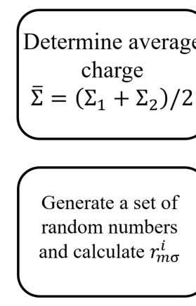
<figcaption class="paper-figure-caption"><b>Fig 1.</b> Figure 1. Algorithm for selecting states on a pair of nodes.</figcaption>
</figure>
<figure class="paper-figure-card">
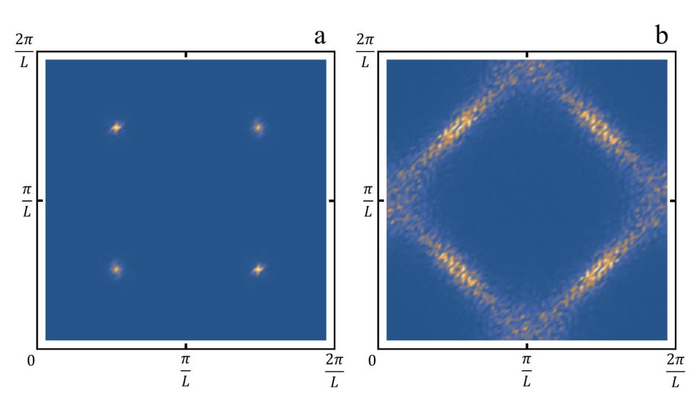
<figcaption class="paper-figure-caption"><b>Fig 2.</b> Figure 2. Reciprocal lattice image at T = 0.001; J2 = 0.3 (a), J2 = 3 (b), other parameters</figcaption>
</figure>
</div>

<p><strong>Summary.</strong> This paper uses classical Monte Carlo simulations to model the magnetic structure of a charge-disproportionated nickelate. By incorporating higher-order exchange interactions, the authors determine that the magnetic ordering is stabilized by third-neighbor interactions, yielding a characteristic $\mathbf{k} = (1/4, 1/4)$ pattern consistent with experimental findings.</p>
<p><strong>Why it may be interesting.</strong> While focused on magnetism, the use of advanced classical simulation techniques (Monte Carlo, CUDA) to model complex correlated electronic states in transition metal oxides provides valuable insights into many-body physics relevant to strongly correlated electron systems.</p>
<details>
<summary>Detailed structure</summary>
<p><strong>Main problem.</strong> The study aims to determine the magnetic structures present in a model nickelate, specifically investigating the influence of higher-order exchange interactions ($J_2$ and $J_3$) and charge disproportionation.</p>
<p><strong>Main result.</strong> The research finds that the magnetic ordering is governed by interactions between second and third neighbors, confirming that an antiferromagnetic structure with a propagation vector $\mathbf{k} = (1/4, 1/4)$ is formed under specific conditions, matching experimental data.</p>
<p><strong>Method.</strong> The study employs the classical Monte Carlo method using the Metropolis algorithm, adapted for an eight-state system, and utilizes CUDA for parallel computation.</p>
<p><strong>Model / system.</strong> The system is a model nickelate, representing a charge-disproportionated phase of $\text{RNiO}_3$. The model Hamiltonian incorporates terms for transfer integrals, local/nonlocal correlations, and exchange integrals up to the third neighbor ($J_1, J_2, J_3$).</p>
<p><strong>Key observables.</strong> The magnetic structure factor $S(\mathbf{q})$ is the primary observable used to characterize the magnetic order.</p>
<p><strong>Important parameters / regimes.</strong> The key parameters are the ratios of the exchange integrals ($J_1, J_2, J_3$) and the temperature (simulations performed at very low temperatures, e.g., $T = 0.001$).</p>
<p><strong>Assumptions / limitations.</strong> The analysis assumes a classical treatment using the Monte Carlo method and incorporates a kinematic account to conserve the average charge concentration.</p>
<p><strong>Figures summary.</strong> Figure 1 shows the structure factor at low temperature. Figure 2 compares the reciprocal lattice image for different values of $J_2$. Figure 3 illustrates the spin sublattice for third-neighbor ordering and the competition between second and third-neighbor orders.</p>
<p><strong>Paper structure.</strong> The paper systematically analyzes the magnetic interactions, first noting the suppression of nearest-neighbor AFM order due to charge disproportionation. It then investigates the contributions from second and third neighbors, culminating in the determination of the stable magnetic ordering vector $\mathbf{k}$ based on varying exchange integral ratios.</p>
</details>
<details>
<summary>Abstract</summary>
<p>Within the framework of the classical Monte Carlo method with kinematic account of constant bosons concentration a model nickelate was studied, its magnetic structures for various values of exchange integrals considering up to third-nearest neighbours were determined.</p>
</details>
<p><sub><a href="#top">↑ back to top</a></sub></p>

<p><a id="paper-2610.36029"></a></p>
<h3 id="algebrastqd-computing-algebras-and-interfaces-in-twisted-quantum-doubles"><a href="http://arxiv.org/abs/2610.36029v1">AlgebrasTQD: Computing Algebras and Interfaces in Twisted Quantum Doubles</a></h3>
<p><strong>Authors:</strong> Alison Warman<br>
<strong>Type:</strong> theory · <strong>Category:</strong> strongly correlated electrons · <strong>PDF:</strong> <a href="https://arxiv.org/pdf/2610.36029v1">https://arxiv.org/pdf/2610.36029v1</a><br>
<strong>Analysis basis:</strong> full PDF text, analyzed in chunks
<strong>Topic relevance:</strong> <code>analog quantum simulation</code> <strong>1/5</strong></p>
<div class="figure-strip-hint">↔ Scroll figures horizontally</div>
<div class="paper-figures-scroll">
<figure class="paper-figure-card">
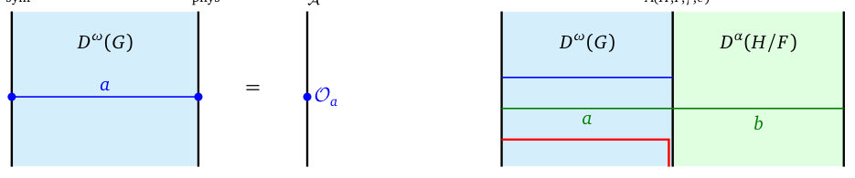
<figcaption class="paper-figure-caption"><b>Fig 1.</b> Figure 1: Left: the SymTFT slab. The symmetry boundary Lsym fixes the symmetry S, the physical boundary is specified by a condensable algebra Aphys, and anyons a that end on both boundaries become the order parameters Oa of the phase PS A. Right: a non-Lagrangian algebra defines an interface to the reduced topological order. Anyons are condensed on the interface (blue), confined (red), or pass through as anyons b of the reduced topological order (green): this is encoded in the map of anyons b 7→a of (17).</figcaption>
</figure>
<figure class="paper-figure-card">
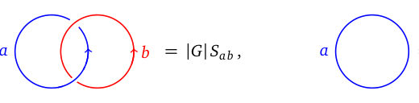
<figcaption class="paper-figure-caption"><b>Fig 2.</b> Figure 2: The modular S matrix of Z(Vecω G ): the Hopf link of two anyons a and b is D Sab, with</figcaption>
</figure>
<figure class="paper-figure-card">
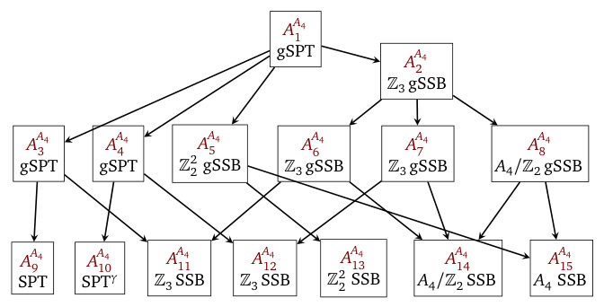
<figcaption class="paper-figure-caption"><b>Fig 3.</b> Figure 3: Hasse diagram for D(A4), whose algebras are detailed in Table 5. SPTγ denotes the non-trivial A4-SPT.</figcaption>
</figure>
<figure class="paper-figure-card">
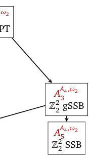
<figcaption class="paper-figure-caption"><b>Fig 4.</b> Figure 4: Hasse diagram for Dω2(A4). The algebras are detailed in Table 6.</figcaption>
</figure>
<figure class="paper-figure-card">
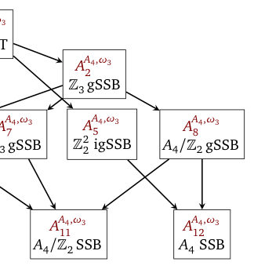
<figcaption class="paper-figure-caption"><b>Fig 5.</b> Figure 5: Hasse diagram for Dω3(A4), whose algebras are detailed in Table 7.</figcaption>
</figure>
</div>

<p><strong>Summary.</strong> This paper presents AlgebrasTQD, a computational tool for analyzing condensable algebras associated with twisted quantum doubles $D_\omega(G)$. It allows for the rigorous classification of 1+1d topological phases by computing the algebra structure, identifying equivalent/inequivalent phases, and determining the nature of topological interfaces. This is vital for understanding exotic quantum matter and designing quantum error-correcting codes.</p>
<p><strong>Why it may be interesting.</strong> This work provides a powerful, general computational tool for classifying complex topological phases that arise in condensed matter systems, connecting abstract algebra to physical observables like anyon statistics and phase transitions.</p>
<details>
<summary>Detailed structure</summary>
<p><strong>Main problem.</strong> The paper addresses the computation and classification of condensable algebras and their corresponding topological boundaries and interfaces for twisted quantum doubles $D_\omega(G)$. This is crucial for understanding symmetry-protected topological phases in 1+1d systems.</p>
<p><strong>Main result.</strong> The authors introduce AlgebrasTQD, an open-source code that computes the full structure of these algebras, classifies them into isomorphism classes, and identifies twin algebras, thereby advancing the classification of gapped and gapless phases.</p>
<p><strong>Method.</strong> The methodology relies on advanced group theory and algebraic computation implemented in the GAP software package to analyze the structure of condensable algebras $A(H, F, \gamma, \epsilon)$.</p>
<p><strong>Model / system.</strong> The theoretical framework centers on Symmetry Topological Field Theories (SymTFT) realized via twisted quantum doubles $D_\omega(G)$. These models are used to study 2+1d anyon proliferation and construct logical gates in non-Abelian topological quantum codes.</p>
<p><strong>Key observables.</strong> Condensable algebras, anyon types, topological boundaries, interfaces, and the resulting classification of 1+1d gapped/gapless phases.</p>
<p><strong>Important parameters / regimes.</strong> The finite group $G$ and the anomaly $\omega \in H^3(G, U(1))$ are the primary input parameters, with the code being general for any such pair.</p>
<p><strong>Assumptions / limitations.</strong> The primary limitation noted is computational time and size, but the code is claimed to be exact for any finite group $G$ and 3-cocycle $\omega$.</p>
<p><strong>Figures summary.</strong> Figure 1 illustrates the SymTFT slab, showing the relationship between the symmetry fixing boundary ($L_{sym}$), the physical boundary ($A_{phys}$), and the interface to a reduced topological order. Figure 2 shows the modular S matrix.</p>
<p><strong>Paper structure.</strong> The paper introduces the problem of computing condensable algebras for $D_\omega(G)$, details the functionality of the AlgebrasTQD code (including functions for subgroups, cocycles, and algebra structure), presents the mathematical framework for classifying phases and interfaces, and concludes with applications to non-Clifford logical gates.</p>
</details>
<details>
<summary>Abstract</summary>
<p>We present AlgebrasTQD, an open-source code written in GAP (Groups, Algorithms, and Programming), for computing condensable algebras and the corresponding topological boundaries and interfaces of twisted quantum doubles $D^ω(G)$. These algebras can be used to classify 1+1d gapped and gapless phases whose symmetry is related by gauging to a finite group $G$ with anomaly $ω\in H^3(G,U(1))$, to study 2+1d anyon proliferation and to construct logical gates in non-Abelian topological quantum codes. The functions in AlgebrasTQD compute all condensable algebras $A(H,F,γ,ε)$ with their algebra structure and anyons, sort them into isomorphism classes and identify the twin algebras that are inequivalent but share the same anyon decomposition. AlgebrasTQD also determines all the subalgebra relations, the corresponding Hasse diagram and the types of 1+1d phases for any chosen, possibly non-invertible, group-theoretical symmetry. For non-maximal algebras, the code computes the reduced topological order with its $3$-cocycle and the map of anyons across the topological interface. Finally, AlgebrasTQD includes functions that construct certain non-Clifford logical gates via non-Abelian surface codes. We summarize the formulas that are implemented in the AlgebrasTQD code, and we illustrate its use with Abelian and non-Abelian groups including $\mathbb{Z}_2^3$ with $ω_\text{III}$, $D_8$, $A_4$ with and without anomaly, twin algebras and twin phases, and the Clifford-hierarchy gates in quantum doubles of dihedral groups. All arithmetic is exact and AlgebrasTQD can be used with any finite group $G$ and 3-cocycle $ω$, limited only by the time and size of the calculation. The code is available at https://github.com/AlisonWarman/AlgebrasTQD</p>
</details>
<p><sub><a href="#top">↑ back to top</a></sub></p>

<p><a id="paper-2610.36673"></a></p>
<h3 id="atom-as-an-agent-emergent-order-by-collective-predictive-coding"><a href="http://arxiv.org/abs/2610.36673v1">Atom as an Agent: Emergent Order by Collective Predictive Coding</a></h3>
<p><strong>Authors:</strong> Koji Hashimoto, Tadahiro Taniguchi<br>
<strong>Type:</strong> theory · <strong>Category:</strong> disordered systems and neural networks · <strong>PDF:</strong> <a href="https://arxiv.org/pdf/2610.36673v1">https://arxiv.org/pdf/2610.36673v1</a><br>
<strong>Analysis basis:</strong> full PDF text, analyzed in chunks
<strong>Topic relevance:</strong> <code>analog quantum simulation</code> <strong>1/5</strong></p>
<div class="figure-strip-hint">↔ Scroll figures horizontally</div>
<div class="paper-figures-scroll">
<figure class="paper-figure-card">
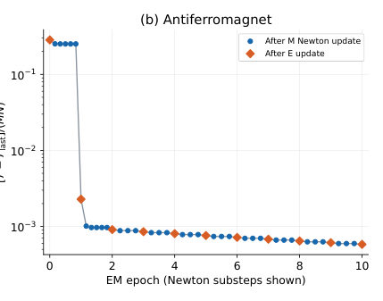
<figcaption class="paper-figure-caption"><b>Fig 1.</b> Fig. 1 E and M updates of the regularized free energy for the selected ferromagnetic (left) and antiferromagnetic (right) cases. The first ten epochs are shown. Blue circles mark individual Newton updates within an M-step; orange diamonds mark the subsequent E- step, with epoch zero denoting the initial E-step. Intermediate Newton updates are spaced evenly within each epoch for display; the horizontal axis is not elapsed time. The vertical axis is the difference from the final recorded free energy, divided by the number of training configurations and sites, on a logarithmic scale. Flast is the value at numerical termination, not an assumed exact minimum.</figcaption>
</figure>
<figure class="paper-figure-card">
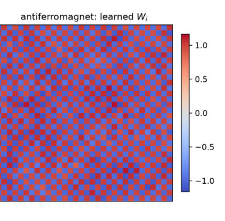
<figcaption class="paper-figure-caption"><b>Fig 2.</b> Fig. 2 Spatial weights Wi learned independently from ferromagnetic (left) and antiferro- magnetic (right) configurations. The uniform and staggered patterns are results of learning, rather than constraints.</figcaption>
</figure>
<figure class="paper-figure-card">
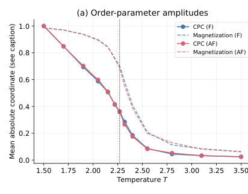
<figcaption class="paper-figure-caption"><b>Fig 3.</b> Fig. 3 Temperature dependence and predictive performance of the learned Ising coor- dinate. (a) Solid curves: mean absolute collective predictive order divided by its value at T = 1.5. Dashed curves: mean absolute magnetization for the ferromagnet (F) and stag- gered magnetization for the antiferromagnet (AF), without rescaling. The nonlinear maps in Eq. (23) relate the learned coordinate to these conventional order parameters. (b) Pre- diction gain ∆NLL, Eq. (20), for the hidden 75% of spins given the observed 25%. Positive values indicate a lower prediction NLL than the independent-site reference. Vertical dotted lines mark Tc.</figcaption>
</figure>
<figure class="paper-figure-card">

<figcaption class="paper-figure-caption"><b>Fig 4.</b> Fig. 4 Collective predictive order (K = 2) inferred from low-temperature stripe configu- rations at T = 1.2, 1.4, and 1.6. Each point represents one test configuration. The separate four sectors associated with +mx, −mx, +my, and −my are observed. Colors identify the conventional stripe sectors after learning; these labels were not supplied to CPC.</figcaption>
</figure>
<figure class="paper-figure-card">
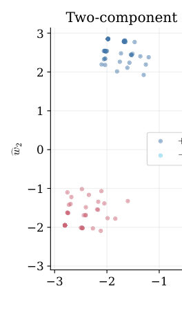
<figcaption class="paper-figure-caption"><b>Fig 5.</b> Figure 4 shows the two components of the collective predictive order bw(S) inferred from test configurations at T = 1.2, 1.4, and 1.6. The four distinguishable groups correspond to the positive and negative sectors of the two stripe orders, identified by color after learning. A polynomial map fitted to part of the test set reconstructs (mx, my) from the learned coordinate with R2 = 0.9861 on the remaining configurations. At high temperature the masked prediction gain becomes negligible or slightly negative: ∆NLL ≃−0.005 for K = 2 at T = 3.6 means that CPC predicts the hidden spins slightly worse than the independent-site reference. A fixed two-component model is therefore use- ful for the...</figcaption>
</figure>
</div>

<p><strong>Summary.</strong> This work proposes the 'Atom-as-an-Agent' principle, using Collective Predictive Coding (CPC) to model how macroscopic order emerges from local interactions in spin systems. By treating atoms as predictive agents, the authors show that a shared latent variable automatically emerges, successfully recovering known order parameters and thermodynamic behaviors. This offers a purely data-driven, machine learning approach to understanding emergent physics.</p>
<p><strong>Why it may be interesting.</strong> It provides a novel, information-theoretic lens (CPC) to study phase transitions and order emergence, bypassing the need to explicitly derive symmetries from the Hamiltonian, which is a major challenge in many-body physics.</p>
<details>
<summary>Detailed structure</summary>
<p><strong>Main problem.</strong> The paper addresses the fundamental question of how macroscopic order parameters emerge from microscopic interactions without relying on explicit Hamiltonian symmetries.</p>
<p><strong>Main result.</strong> The authors demonstrate that a 'collective predictive order' can emerge automatically and robustly from observed spin configurations alone, successfully reproducing known order parameters for various spin models.</p>
<p><strong>Method.</strong> They apply the Collective Predictive Coding (CPC) framework, treating each atom as an agent that predicts the behavior of its neighbors through inference, leading to a data-driven learning process.</p>
<p><strong>Model / system.</strong> The study analyzes classical spin systems, including 2D ferromagnetic/antiferromagnetic Ising models, stripe-ordered models, and the Sherrington-Kirkpatrick spin-glass model.</p>
<p><strong>Key observables.</strong> The 'collective predictive order' (a shared latent variable $w$), which is shown to correlate with known order parameters like magnetization and replica overlap.</p>
<p><strong>Important parameters / regimes.</strong> Temperature ($T$), and the structure of the local communication rules (e.g., nearest-neighbor vs. fully connected).</p>
<p><strong>Assumptions / limitations.</strong> The core assumption is that the emergence mechanism is purely data-driven, relying only on observed configurations rather than the underlying microscopic Hamiltonian structure.</p>
<p><strong>Figures summary.</strong> The notes mention that the learned collective predictive order exhibits a temperature dependence matching the Landau potential for Ising models, and that the readout correlates strongly with known magnetization values.</p>
<p><strong>Paper structure.</strong> The paper introduces CPC to physics, applies it to several spin models, details the variational inference and learning steps (E-step/M-step), and concludes by positioning this as a general 'machine learning physics' approach.</p>
</details>
<details>
<summary>Abstract</summary>
<p>What is the intrinsic reason of emergence of macroscopic order parameter out of microscopic systems? In this article, we apply to physics the collective predictive coding (CPC), the theory of language/symbol emergence. As our language emerges out of our human communications, physical macroscopic order parameter emerges out of communications among atoms --- each atom is regarded as an agent who predicts each other's behavior through inference. We present three examples of classical spin systems: two-dimensional ferromagnetic and antiferromagnetic Ising models, a two-dimensional spin model with competing stripe orders, and the fully connected Sherrington--Kirkpatrick spin-glass model. In all of these examples, proper macroscopic order parameters including the replica overlap emerge automatically through communication informatics of CPC, only from observed spin configurations. We call the learned macroscopic coordinate the collective predictive order. Furthermore, for the ferromagnetic and antiferromagnetic Ising models, the equilibrium distribution of the collective predictive order yields an emergent potential with the symmetry and thermal evolution characteristic of a Landau potential. Notably, the emergence of the collective predictive order does not refer to any structure of microscopic Hamiltonians/Lagrangians. Thus our ``Atom-as-an-Agent" (AaaA) principle offers a completely data-driven method for the emergence of macroscopic order, that is, machine learning physics.</p>
</details>
<p><sub><a href="#top">↑ back to top</a></sub></p>

<p><a id="paper-2610.37426"></a></p>
<h3 id="chaos-picture-of-spin-glasses"><a href="http://arxiv.org/abs/2610.37426v1">Chaos picture of spin glasses</a></h3>
<p><strong>Authors:</strong> Wenlong Wang<br>
<strong>Type:</strong> theory · <strong>Category:</strong> disordered systems and neural networks · <strong>PDF:</strong> <a href="https://arxiv.org/pdf/2610.37426v1">https://arxiv.org/pdf/2610.37426v1</a><br>
<strong>Analysis basis:</strong> full PDF text, analyzed in chunks
<strong>Topic relevance:</strong> <code>analog quantum simulation</code> <strong>1/5</strong></p>
<div class="figure-strip-hint">↔ Scroll figures horizontally</div>
<div class="paper-figures-scroll">
<figure class="paper-figure-card">
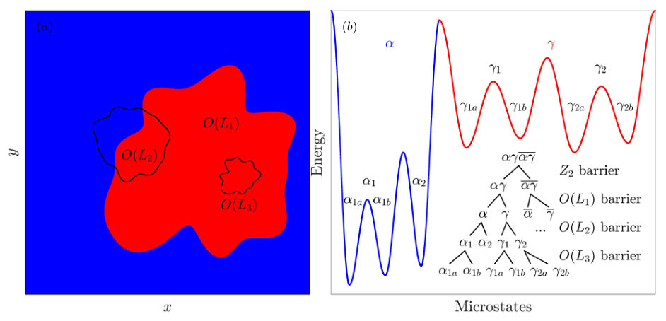
<figcaption class="paper-figure-caption"><b>Fig 1.</b> FIG. 1: A schematic diagram on the formation of the hierarchical energy landscape, illustrated in both the real space (a) and the phase space (b). The system first breaks the Z2 symmetry, see the Z2 barrier on the sides. As the temperature decreases, a large red cluster becomes frozen, leading to the the α (not flipped) and γ (flipped) pure states. Here, we show the γ state relative to the α state in real space for clarity. At a lower temperature, a straddling cluster further splits γ into γ1, γ2 pure states, but this cluster is absent for α and the tree becomes asymmetric. However, α may split into α1, α2 by another cluster of similar size passing through both the O(L1) and O(L3) clusters...</figcaption>
</figure>
</div>

<p><strong>Summary.</strong> This paper introduces the 'chaos picture' as a novel theoretical framework to resolve the decades-old debate in spin glass theory between the droplet and RSB pictures. It posits that the system's freezing is governed by a hierarchical shattering of the free energy landscape driven by temperature chaos. This framework successfully unifies concepts like interface geometry crossover and explains complex dynamics such as aging.</p>
<p><strong>Why it may be interesting.</strong> The concept of 'temperature chaos' and the description of phase space fracturing provide a powerful, dynamic analogy for understanding complex energy landscapes, which has parallels in understanding quantum phase transitions or glassy dynamics in quantum many-body systems.</p>
<details>
<summary>Detailed structure</summary>
<p><strong>Main problem.</strong> The paper aims to reconcile the long-standing theoretical conflict between the droplet picture and the replica symmetry breaking (RSB) approach in the study of spin glasses.</p>
<p><strong>Main result.</strong> The proposed 'chaos picture' offers a coherent framework describing the progressive freezing of scale-dependent droplets in real space, mirroring a hierarchical free energy landscape fracturing in phase space.</p>
<p><strong>Method.</strong> The authors develop a theoretical framework by analyzing the dynamics of pure states, utilizing concepts like temperature chaos and analyzing interface geometry crossovers.</p>
<p><strong>Model / system.</strong> The system studied is the spin glass, modeled by Hamiltonians such as the Edwards-Anderson (EA) and Sherrington-Kirkpatrick (SK) models, characterized by quenched random couplings.</p>
<p><strong>Key observables.</strong> Spin overlap (q), link overlap (ql), interface dimension (ds), and the central weight of the free energy landscape.</p>
<p><strong>Important parameters / regimes.</strong> Temperature (T), system size (L), and dimensionality (d), particularly concerning the crossover from planar to fractal to space-filling interfaces.</p>
<p><strong>Assumptions / limitations.</strong> The chaos picture assumes that droplet excitations and domain-wall excitations are fundamentally similar, and it provides a heuristic description of the hierarchical structure.</p>
<p><strong>Figures summary.</strong> Figure 1 schematically illustrates the bifurcation process in both real space and phase space, linking the physical freezing process to the mathematical landscape fracturing.</p>
<p><strong>Paper structure.</strong> The paper builds its argument by first defining the problem (reconciling droplet vs. RSB), then introducing the chaos picture as the solution, detailing how temperature chaos drives the hierarchical landscape shattering, and finally applying this framework to explain non-equilibrium dynamics like aging.</p>
</details>
<details>
<summary>Abstract</summary>
<p>The chaos picture is a novel, coherent, and intuitive theoretical framework for spin glasses, reconciling the 40-year-old droplet vs. replica symmetry breaking debate. First, we argue the formation of a hierarchical energy landscape by pinning and dynamic filtering of random droplets. As the temperature decreases, the chaos picture describes a progressive freezing of scale-dependent droplets in real space, which mirrors a hierarchical free energy landscape fracturing process in phase space. This bifurcation process is accompanied by temperature chaos, leading to dynamic pure state coexistence without violating the droplet scaling. Crucially, the interface geometry is not critical to these mechanisms, naturally incorporating the interface crossover from planar, fractal, to space-filling as the dimensionality increases, in line with the mean-field limit. Finally, the chaos picture provides profound insights into spin-glass dynamics such as aging, rejuvenation, and memory effect, while offering a streamlined reinterpretation of the complex metastate framework.</p>
</details>
<p><sub><a href="#top">↑ back to top</a></sub></p>

<p><a id="paper-2610.36332"></a></p>
<h3 id="large-superconducting-diode-effect-indicates-nonuniform-triplet-pairing-in-ute2"><a href="http://arxiv.org/abs/2610.36332v1">Large superconducting diode effect indicates nonuniform triplet pairing in UTe2</a></h3>
<p><strong>Authors:</strong> Zheyu Wu, Daniel Shaffer, Dmitry V. Chichinadze, Mengmeng Long, Hanyi Chen, Andrej Cabala, Theodore I. Weinberger, Maurice Bal, Steffen Wiedmann, Dave Graf, Vladimir Sechovský, Michal Vališka, F. Malte Grosche, Alex Levchenko, Alexander G. Eaton<br>
<strong>Type:</strong> both · <strong>Category:</strong> strongly correlated electrons · <strong>PDF:</strong> <a href="https://arxiv.org/pdf/2610.36332v1">https://arxiv.org/pdf/2610.36332v1</a><br>
<strong>Analysis basis:</strong> full PDF text, analyzed in chunks
<strong>Topic relevance:</strong> <code>Keldysh / 2PI / non-Gaussian methods</code> <strong>1/5</strong></p>
<div class="figure-strip-hint">↔ Scroll figures horizontally</div>
<div class="paper-figures-scroll">
<figure class="paper-figure-card">
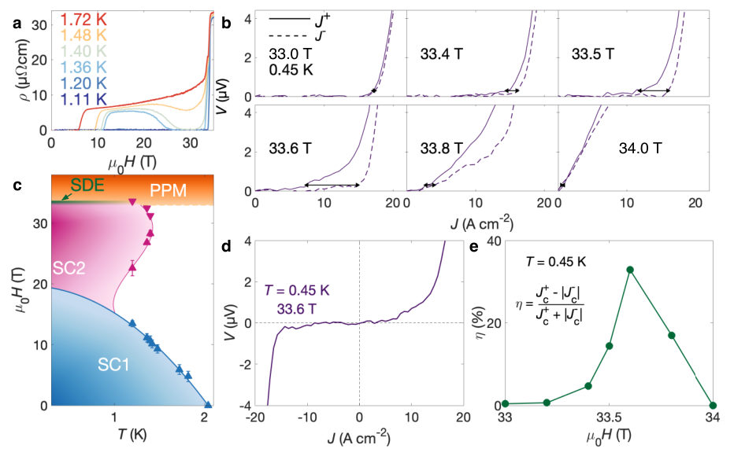
<figcaption class="paper-figure-caption"><b>Fig 1.</b> Fig. 1. Superconducting diode effect in UTe2. a, Resistivity 𝜌as a function of applied magnetic field H ∥[010] at various temperatures 𝑇. Throughout this Article, all currents were sourced along [100]. At low 𝑇re-entrant SC2 superconductivity occurs around 20-33 T, above which a sharp increase in 𝜌marks a metamagnetic transition into a po- larized paramagnetic (PPM) state. b, Voltage 𝑉as a function of dc current density 𝐽for positive (solid curves) and negative (dashed curves) polarity current sweeps, at indi- cated steady 𝐻values. At 33 T, 𝑉(𝐽+) = 𝑉(𝐽−) within resolution. By contrast, between 33.4-33.8 T this is no longer the case, with very different forms of 𝑉(𝐽+) compared to 𝑉(𝐽−). c,...</figcaption>
</figure>
<figure class="paper-figure-card">
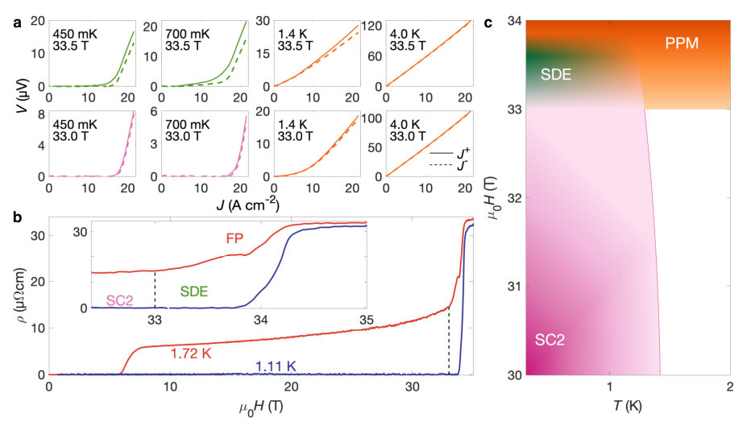
<figcaption class="paper-figure-caption"><b>Fig 2.</b> Fig. 2. Coexistence of superconductivity and magnetism. a, Positive (solid) and negative (dashed) polarity current sweeps at various temperatures 𝑇in fixed fields of 33.5 T (top row) and 33.0 T (bottom row). SDE is visible at low 𝑇at 33.5 T. At 4.0 K (above 𝑇𝑐) Ohmic, reciprocal 𝑉(𝐽) is observed. b, The 1.11 K and 1.72 K resistivity 𝜌 data replotted from Fig. 1a, with zoomed inset. The small field region over which the SDE is observed between 33-34 T shows 𝜌= 0 at 1.11 K. By contrast, after warming above the 𝑇𝑐of SC2, at 1.72 K the metamagnetic transition – characterized by the sharp increase in 𝜌(marked by dashed line) – is observed to start at 33.0 T. This indicates that the SDE occurs...</figcaption>
</figure>
<figure class="paper-figure-card">
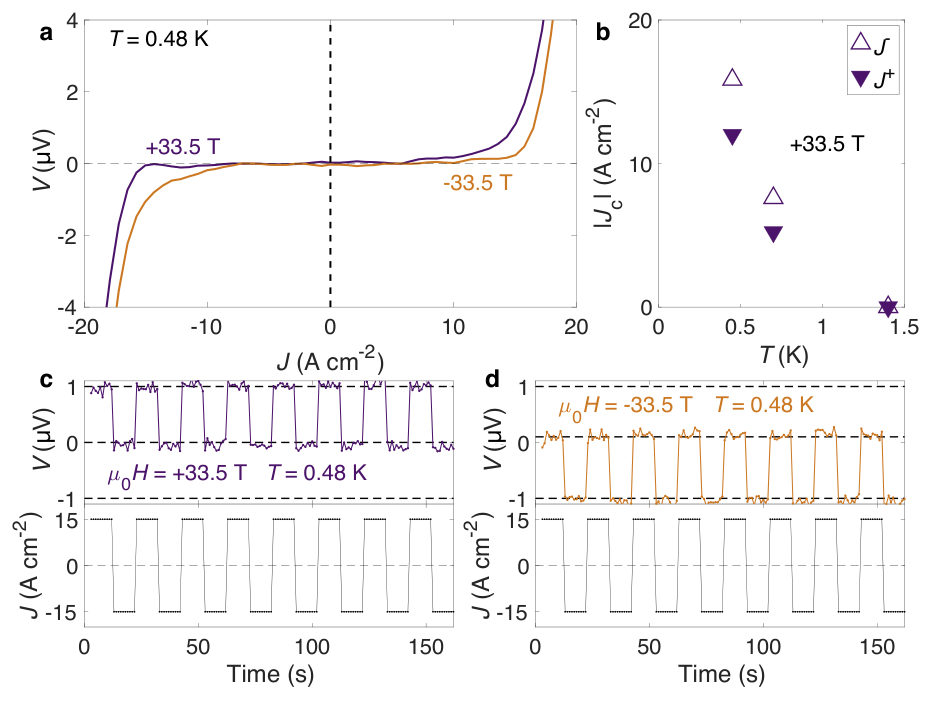
<figcaption class="paper-figure-caption"><b>Fig 3.</b> Fig. 3. Supercurrent rectification. a, 𝑉(𝐽) measured for positive (purple) and neg- ative (ochre) polarity magnetic field orientations of |𝜇0𝐻| = 33.5 T. The two curves are field-antisymmetric – that is, one can be mapped to the other by multiplying each volt- age value by -1. b, Magnitudes of the critical current densities 𝐽+ 𝑐(filled triangles) and 𝐽− 𝑐(open triangles) as a function of temperature at 𝜇0𝐻= +33.5 T, extracted from the 𝑉(𝐽) sweeps in Fig. 2a. 𝐽− 𝑐 exceeds 𝐽+ 𝑐at all temperatures where the critical currents are finite, and both are suppressed to zero by 1.4 K. c,d, Supercurrent rectification for 𝜇0𝐻= +33.5 T (c) and at 𝜇0𝐻= −33.5 T (d), as 𝐽is alternated between ±15 Acm−2. By...</figcaption>
</figure>
<figure class="paper-figure-card">
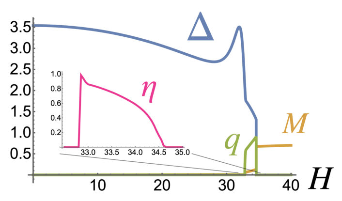
<figcaption class="paper-figure-caption"><b>Fig 4.</b> Fig. 4. Ginzburg-Landau modeling of a triplet FFLO state. Order parameters Δ, 𝑀, and 𝑞versus applied magnetic field 𝐻(GL parameters listed in the text). A non- zero 𝑞, indicating spontaneous ISB, occurs near the metamagnetic phase transition, accompanied by a non-zero diode efficiency 𝜂, shown in the inset.</figcaption>
</figure>
</div>

<p><strong>Summary.</strong> This work reports a large superconducting diode effect in UTe2, arguing that this non-reciprocal transport is an intrinsic signature of spontaneous inversion symmetry breaking. By confining the SDE to a specific magnetic/superconducting phase coexistence region, the authors strongly suggest the formation of a nonuniform, finite-momentum Cooper pair state characteristic of an FFLO phase.</p>
<p><strong>Why it may be interesting.</strong> The connection between non-equilibrium transport phenomena (SDE) and intrinsic pairing symmetries (FFLO/ISB) in a strongly correlated material like UTe2 provides a powerful experimental diagnostic tool for exotic superconducting states.</p>
<details>
<summary>Detailed structure</summary>
<p><strong>Main problem.</strong> To determine if the large superconducting diode effect (SDE) observed in UTe2 indicates spontaneous inversion symmetry breaking (ISB) accompanied by finite-momentum Cooper pairing, rather than being due to extrinsic effects like vortex pinning asymmetries.</p>
<p><strong>Main result.</strong> The non-reciprocal transport (SDE) is strictly confined to a narrow field regime where superconductivity coexists with a field-induced spin-polarized state, strongly suggesting an intrinsic origin linked to spontaneous ISB and nonuniform triplet pairing.</p>
<p><strong>Method.</strong> The study combines experimental measurements of SDE and resistivity ($
ho(H)$) with theoretical modeling using a phenomenological Ginzburg-Landau (GL) theory.</p>
<p><strong>Model / system.</strong> The physical system is the heavy-fermion triplet superconductor UTe2. The theoretical framework involves an extended GL theory describing the interplay between magnetic order ($\mathbf{M}$) and superconducting order ($\Delta$), which can stabilize an odd-parity FFLO state.</p>
<p><strong>Key observables.</strong> Superconducting Diode Effect (SDE) efficiency ($\eta$), electrical resistivity ($
ho$), and the coexistence region between the SC2 and Polarized Paramagnetic (PPM) states.</p>
<p><strong>Important parameters / regimes.</strong> High magnetic field strength ($\mu_0H = 33.6 	ext{ T}$), the narrow field regime of phase coexistence, and the magnitude of the diode efficiency (up to 33%).</p>
<p><strong>Assumptions / limitations.</strong> The primary assumption is that the confinement of the SDE to a specific phase overlap rules out purely extrinsic vortex pinning asymmetries, pointing toward an intrinsic mechanism.</p>
<p><strong>Figures summary.</strong> Figures illustrate the $
ho(H)$ dependence, the $V(J)$ characteristics showing polarity dependence, and the phase diagram mapping out the narrow region where the SDE is observed.</p>
<p><strong>Paper structure.</strong> The paper establishes the SDE as a probe for ISB, presents experimental evidence showing the SDE is localized to a specific SC2/PPM coexistence region, and uses GL theory to model this confinement as evidence for an intrinsic, nonuniform FFLO state.</p>
</details>
<details>
<summary>Abstract</summary>
<p>The superconducting diode effect (SDE) is characterized by unequal critical current magnitudes for opposite-polarity current flow, owing to broken spatial-inversion and time-reversal symmetries. For a superconducting pair wavefunction to spontaneously break inversion symmetry implies the formation of Cooper pairs with nonzero momentum, yielding a nonuniform superconducting state. For singlet superconductors, the formation of such a (FFLO) state has long been understood to provide an escape from high field Pauli pair-breaking -- how and why such an effect might occur for equal spin pairing is an open question. Here we report the observation of a large SDE in bulk specimens of the three-dimensional heavy-fermion triplet superconductor UTe$_2$, with a peak diode efficiency of 33% at the high magnetic field strength of 33.6 T, representing the highest-field observation of the SDE to date. Crucially, this nonreciprocal transport is strictly confined to a narrow field regime where superconductivity coexists with a field-induced spin-polarized state near a first-order metamagnetic phase boundary. The absence of the SDE away from this slender phase-intersection argues strongly against purely extrinsic vortex pinning asymmetries. Instead, our findings indicate spontaneous inversion symmetry breaking accompanied by finite-momentum Cooper pairing. We model this behavior using a phenomenological Ginzburg-Landau theory, demonstrating that the intertwining of magnetic and triplet superconducting orders can stabilize an odd-parity FFLO state.</p>
</details>
<p><sub><a href="#top">↑ back to top</a></sub></p>

<p><a id="paper-2610.37122"></a></p>
<h3 id="matrix-samplers-and-quantum-proof-extractors-their-correspondence-and-almost-optimal-constructions"><a href="http://arxiv.org/abs/2610.37122v1">Matrix Samplers and Quantum-Proof Extractors: Their Correspondence and Almost-Optimal Constructions</a></h3>
<p><strong>Authors:</strong> Kuan Cheng, Ruiyang Wu<br>
<strong>Type:</strong> theory · <strong>Category:</strong> quantum information and computing · <strong>PDF:</strong> <a href="https://arxiv.org/pdf/2610.37122v1">https://arxiv.org/pdf/2610.37122v1</a><br>
<strong>Analysis basis:</strong> full PDF text, analyzed in chunks
<strong>Topic relevance:</strong> <code>quantum measurements</code> <strong>1/5</strong></p>
<div class="figure-strip-hint">↔ Scroll figures horizontally</div>
<div class="paper-figures-scroll">
<figure class="paper-figure-card">
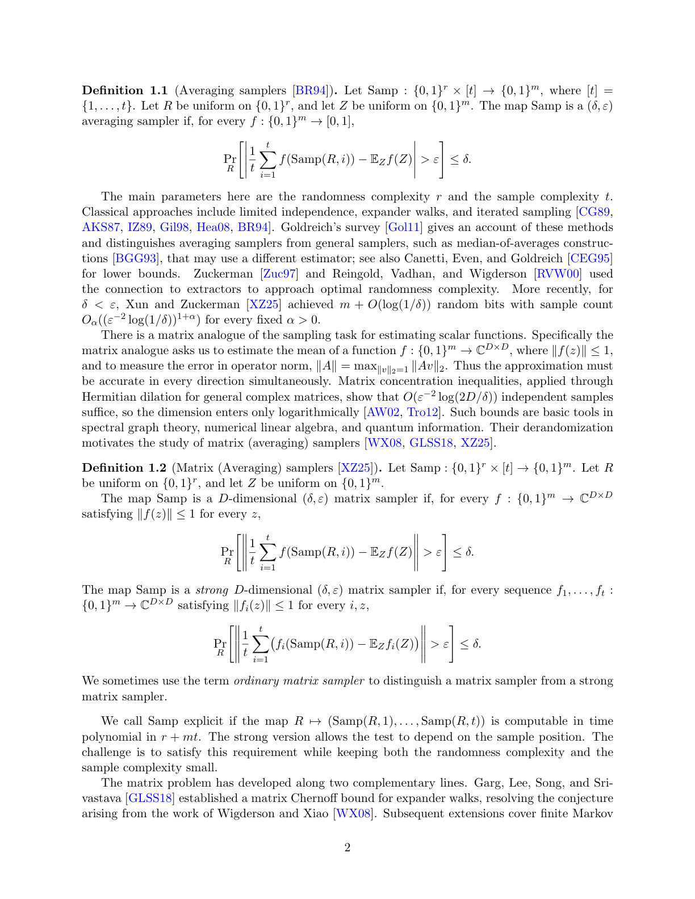
<figcaption class="paper-figure-caption"><b>Fig 1.</b> Low-resolution page preview, page 2</figcaption>
</figure>
<figure class="paper-figure-card">
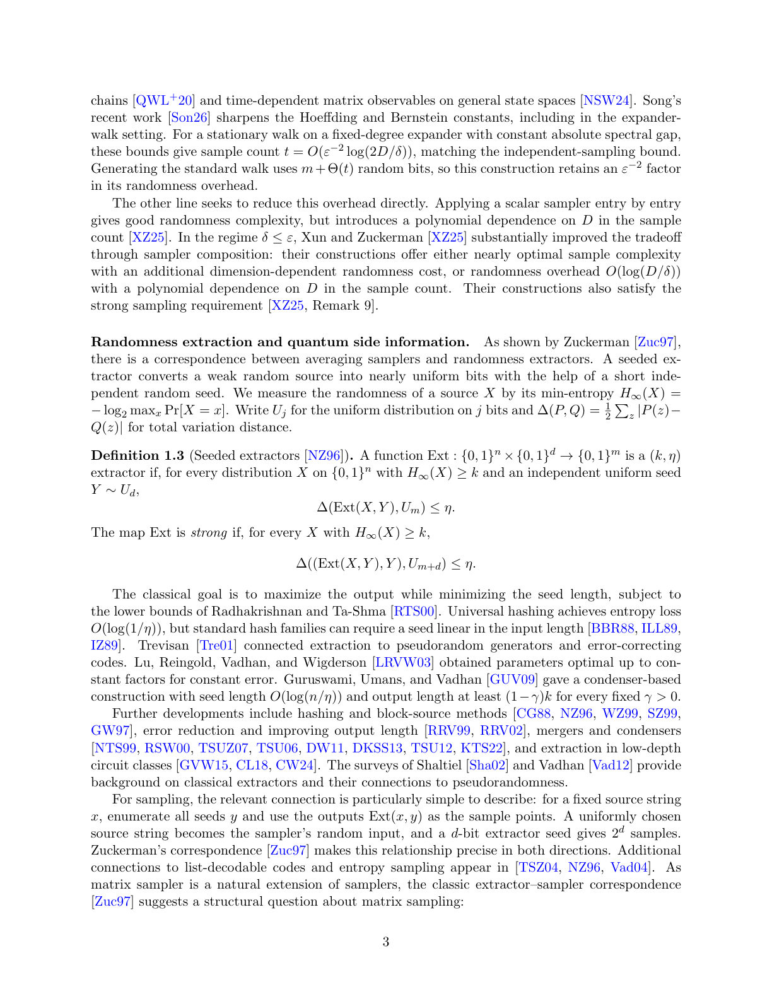
<figcaption class="paper-figure-caption"><b>Fig 2.</b> Low-resolution page preview, page 3</figcaption>
</figure>
<figure class="paper-figure-card">
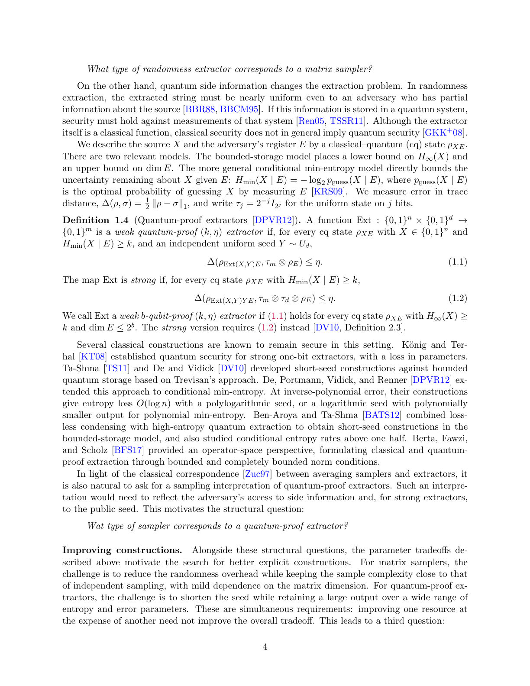
<figcaption class="paper-figure-caption"><b>Fig 3.</b> Low-resolution page preview, page 4</figcaption>
</figure>
<figure class="paper-figure-card">
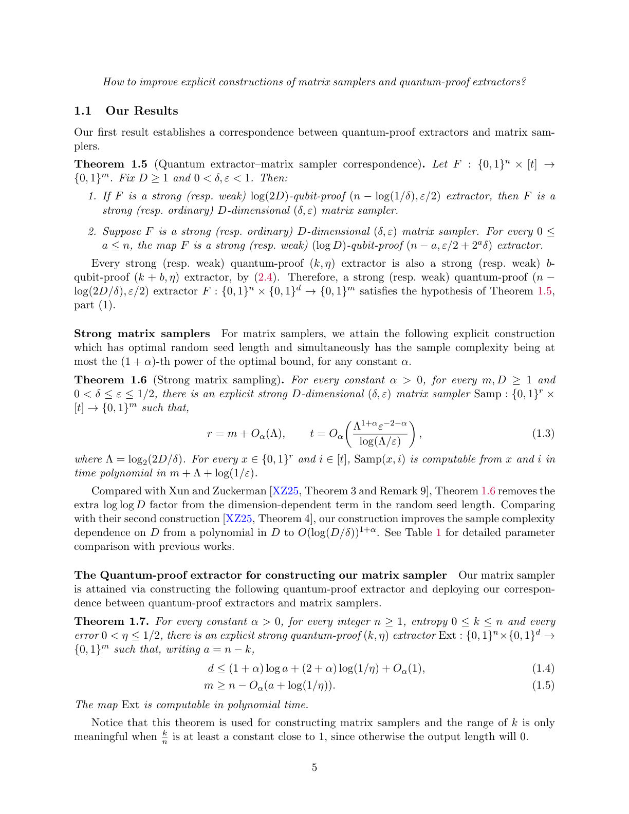
<figcaption class="paper-figure-caption"><b>Fig 4.</b> Low-resolution page preview, page 5</figcaption>
</figure>
<figure class="paper-figure-card">
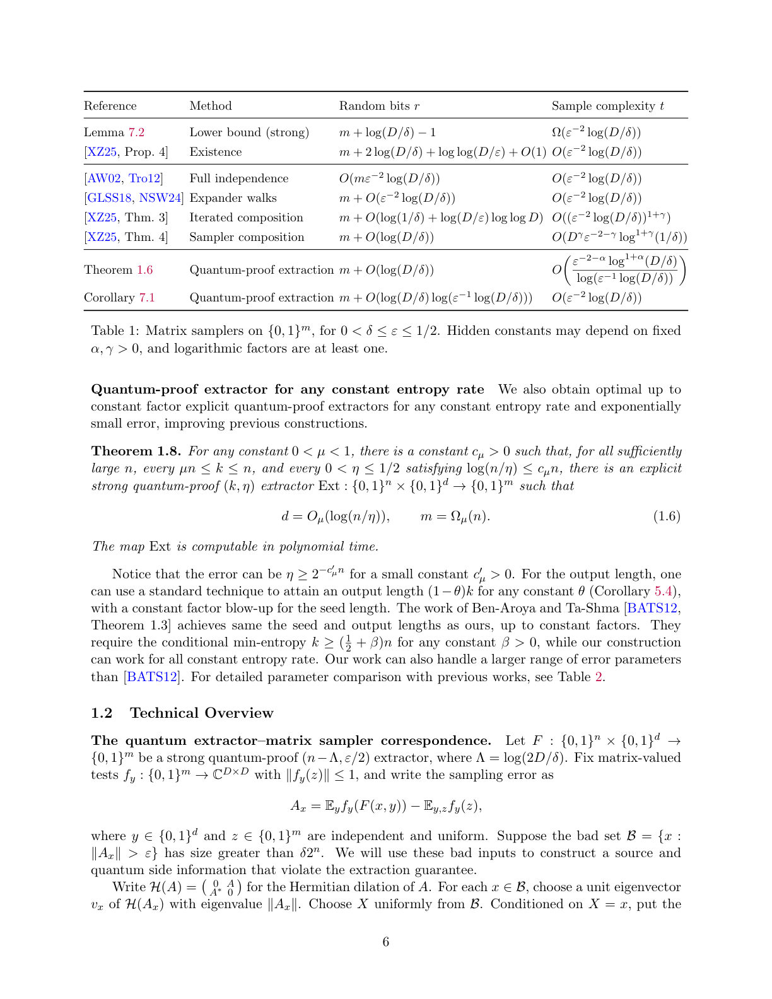
<figcaption class="paper-figure-caption"><b>Fig 5.</b> Low-resolution page preview, page 6</figcaption>
</figure>
</div>

<p><strong>Summary.</strong> This paper proves a deep equivalence between matrix samplers and quantum-proof randomness extractors. It then constructs highly efficient, explicit versions of these tools, significantly improving the known resource bounds for both sampling and randomness extraction. This advances the theoretical understanding of how randomness can be efficiently extracted and utilized in quantum information tasks.</p>
<p><strong>Why it may be interesting.</strong> While the focus is on abstract information theory, the techniques developed for quantifying randomness extraction and sampling bounds are fundamental tools used in analyzing quantum communication protocols and quantum computation complexity.</p>
<details>
<summary>Detailed structure</summary>
<p><strong>Main problem.</strong> The paper establishes a formal equivalence between matrix samplers and quantum-proof randomness extractors, aiming to construct explicit, near-optimal versions of both tools.</p>
<p><strong>Main result.</strong> They provide explicit constructions for strong matrix samplers and quantum-proof extractors, significantly improving resource bounds compared to prior work.</p>
<p><strong>Method.</strong> The work relies on establishing a theoretical correspondence between the two concepts and then employing advanced techniques from quantum information theory, such as bounding trace distance and utilizing conditional min-entropy.</p>
<p><strong>Model / system.</strong> The context is abstract information theory, dealing with random sampling of matrices (estimators for expected values) and the extraction of randomness from noisy quantum sources.</p>
<p><strong>Key observables.</strong> Trace distance ($\Delta$), conditional min-entropy ($H_{\min}$), sample complexity ($t$), and random seed length ($d$).</p>
<p><strong>Important parameters / regimes.</strong> Dimension ($D$), accuracy ($\epsilon$), failure probability ($\delta$), and entropy rate ($\mu$).</p>
<p><strong>Assumptions / limitations.</strong> The equivalence is built upon classical results (Zuckerman, 1997) and quantum security analysis requiring bounds on conditional min-entropy.</p>
<p><strong>Figures summary.</strong> Not specified in the notes, but the paper compares parameter trade-offs for various constructions in tables.</p>
<p><strong>Paper structure.</strong> The paper proceeds by first establishing the equivalence (Theorem 1.5), then providing explicit constructions for the samplers (Theorem 1.6) and extractors (Theorem 1.7, 1.8), and finally deriving lower bounds on sample complexity (Chunk 3).</p>
</details>
<details>
<summary>Abstract</summary>
<p>We establish an equivalence between matrix samplers and quantum-proof randomness extractors. The classical sampler--extractor equivalence is established by a seminal work of Zuckerman (Random Structures &amp; Algorithms, 1997).   Using this equivalence, we construct explicit strong matrix samplers with optimal randomness overhead and near-optimal sample complexity via constructing quantum-proof extractors. Specifically for matrix dimension $D$, accuracy $\varepsilon$ and failure probability $δ\leq\varepsilon$, our matrix sampler uses $m+O_α(\log(D/δ))$ random bits and $O_α(\varepsilon^{-2-α}\log^{1+α}(D/δ))$ samples, for any constant $α>0$. Compared with the matrix sampler of Xun and Zuckerman (CCC 2025), our construction has improvements in two aspects. Under the same optimal random seed length, we can replace the $\operatorname{poly} D$ dependence in the number of samples by $O(\log^{1-γ} D)$. Under the same scale of sample size, we can remove their $\log\log D$ factor in the length of the random seed. Our underlying strong quantum-proof extractor has output length $n-O_α(a+\log(1/η))$ and seed length at most $(1+α)\log a+(2+α)\log(1/η)+O_α(1)$ for $n$-bit sources with conditional min-entropy $n-a$ and error $η$.   We also obtain strong quantum-proof extractors for every constant entropy rate, for any error as small as $2^{-Ω(n)}$, having optimal seed length $O(\log(n/η))$ and output length $Ω(n)$, improving previous constructions.</p>
</details>
<p><sub><a href="#top">↑ back to top</a></sub></p>

<p><a id="paper-2610.37009"></a></p>
<h3 id="momentum-space-entanglement-and-mutual-information-in-kaluza-klein-reduction"><a href="http://arxiv.org/abs/2610.37009v1">Momentum-space entanglement and mutual information in Kaluza-Klein reduction</a></h3>
<p><strong>Authors:</strong> Udaykrishna Thattarampilly, Yunlong Zheng<br>
<strong>Type:</strong> theory · <strong>Category:</strong> other · <strong>PDF:</strong> <a href="https://arxiv.org/pdf/2610.37009v1">https://arxiv.org/pdf/2610.37009v1</a><br>
<strong>Analysis basis:</strong> full PDF text, analyzed in chunks
<strong>Topic relevance:</strong> <code>Keldysh / 2PI / non-Gaussian methods</code> <strong>1/5</strong></p>
<div class="figure-strip-hint">↔ Scroll figures horizontally</div>
<div class="paper-figures-scroll">
<figure class="paper-figure-card">

<figcaption class="paper-figure-caption"><b>Fig 1.</b> Figure 1. Numerical evaluation of the kernels, for µR = 1. (a) Cubic channel: nJ(3) n in units of A3/R, from Monte Carlo (points) and direct quadrature (line). Dashed line corresponds to the asymptotic value. (b) Combined (2, 2) and mixed channels: Kn/ΛUVR for three different cutoffs, compared with the linear form of Eq. (5.10) (dashed), valid for n ≪ΛUVR. (c) (1, 3) channel: J(1,3) n /(ΛUVR)2 for three different cutoffs, compared with Eq. (5.11) (dashed). The statistical errors are below 1% in (a) and (b) and below 2% in (c).</figcaption>
</figure>
</div>

<p><strong>Summary.</strong> This work analyzes entanglement in theories compactified on a circle, focusing on the mutual information between low-energy zero modes and the massive Kaluza-Klein tower. The key finding is that while the low-energy effective action correctly describes local observables, the entanglement structure of the full quantum state is missed by this local description. This highlights a fundamental limitation in applying standard effective field theory techniques to quantum information measures.</p>
<p><strong>Why it may be interesting.</strong> The finding that entanglement is non-local and missed by the standard derivative expansion is crucial for understanding the limitations of effective field theories derived from higher dimensions.</p>
<details>
<summary>Detailed structure</summary>
<p><strong>Main problem.</strong> The paper investigates the momentum-space entanglement and mutual information arising from Kaluza-Klein (KK) reduction when compact extra dimensions are present.</p>
<p><strong>Main result.</strong> The mutual information with the KK tower is not captured by the local, low-energy effective action, suggesting the effective theory describes observables but not the full quantum state.</p>
<p><strong>Method.</strong> The authors calculate entanglement measures (mutual information) by tracing out the massive KK modes from the full higher-dimensional state, using perturbation theory in the coupling constant.</p>
<p><strong>Model / system.</strong> The system is a five-dimensional scalar field on $M_4 	imes S^1$ with cubic or quartic self-interactions, reduced to a four-dimensional effective theory.</p>
<p><strong>Key observables.</strong> Momentum-space entanglement, mutual information $I_n$, and the reduced density matrix $
ho_A$.</p>
<p><strong>Important parameters / regimes.</strong> Compactification radius $R$, zero-mode cutoff $\mu$, and the mass $m_n$ of the KK level $n$.</p>
<p><strong>Assumptions / limitations.</strong> Calculations are performed at leading order in the coupling constant, and the local effective theory is assumed to capture low-energy observables.</p>
<p><strong>Figures summary.</strong> Not specified in the notes, but the analysis involves comparing calculated quantities against expected linear asymptotic forms.</p>
<p><strong>Paper structure.</strong> The paper systematically analyzes the entanglement generated by interactions in the KK reduced theory, contrasting the behavior in cubic versus quartic self-interaction models.</p>
</details>
<details>
<summary>Abstract</summary>
<p>In theories with compact extra dimensions, the four-dimensional effective description is obtained by Kaluza-Klein reduction. The state available to a four-dimensional observer is the reduced density matrix obtained by tracing the higher-dimensional vacuum over the tower of massive modes, and it need not be pure. In this paper we study the momentum-space entanglement of this state for a five-dimensional scalar on $M_4\times S^1$ with a cubic or quartic self-interaction. We compute, at leading order in the coupling, the mutual information $I_n$ between the zero modes below a resolution scale $μ$ and a single Kaluza-Klein level $n$. When the zero modes couple linearly and without derivatives to pairs of tower modes, $I_n$ falls as $1/m_n$, where $m_n$ is the mass of level $n$. In the cubic theory, this tail is independent of the ultraviolet cutoff, with coefficient $(μR)^2/1024π^3$ for compactification radius $R$, and the mutual information with the whole tower grows logarithmically with the number of levels. In the quartic theory, the tail is masked by states containing additional hard quanta, which make $I_n$ depend on the cutoff. Compared with the corrections the tower makes to low-energy amplitudes, which are dominated by the lightest levels and captured by local operators, the mutual information with the tower is not dominated by any finite set of levels and arises from the time-nonlocal part of the effective action. The local four-dimensional effective theory therefore describes the low-energy observables of the reduced system but not its state. Unbroken supersymmetry cancels the vacuum energy of the compactification but not the mutual information, which at leading order is a sum of squared amplitudes.</p>
</details>
<p><sub><a href="#top">↑ back to top</a></sub></p>

<p><a id="paper-2610.37204"></a></p>
<h3 id="qnetsim-for-memory-assisted-design-of-satellite-and-hybrid-quantum-networks"><a href="http://arxiv.org/abs/2610.37204v1">QNETSIM for memory assisted design of satellite and hybrid quantum networks</a></h3>
<p><strong>Authors:</strong> Seid Koudia, Francesco Vista, Heyang Peng, Ilora Maity, Intidhar Bedhief, Juan Carlos Hernandez Hernandez, Symeon Chatzinotas<br>
<strong>Type:</strong> theory · <strong>Category:</strong> quantum information and computing · <strong>PDF:</strong> <a href="https://arxiv.org/pdf/2610.37204v1">https://arxiv.org/pdf/2610.37204v1</a><br>
<strong>Analysis basis:</strong> full PDF text, analyzed in chunks
<strong>Topic relevance:</strong> <code>methods for driven-dissipative</code> <strong>1/5</strong></p>
<div class="figure-strip-hint">↔ Scroll figures horizontally</div>
<div class="paper-figures-scroll">
<figure class="paper-figure-card">

<figcaption class="paper-figure-caption"><b>Fig 1.</b> Figure 1: QNETSIM architecture and orchestration. (a) Physical models are evaluated at discrete-event boundaries, node agents execute local operations, and the resource ledger records endpoint occupancy and state descriptors. Solid arrows denote software interactions, not quantum-state copying; the instrument-valued formulation specifies the meaning of compact physical interfaces. (b) Request, generation, storage, swap, and delivery messages are scheduled operations rather than instantaneous transfers. Physical outcome, controller knowledge, and endpoint frame readiness have distinct timestamps. Local BSM operands are consumed while the original ages of surviving remote memories are...</figcaption>
</figure>
<figure class="paper-figure-card">

<figcaption class="paper-figure-caption"><b>Fig 2.</b> Figure 2: Complete S1 conditional-fidelity sweep. Rows are cases A–D; the left column varies 𝑇2, and the right varies 𝜎2 𝑅. Each curve is the median of supported run-bin means over four repeats, with no temporal smoothing. Empty-support bins remain undefined. The first two rows have co-located stations, not a 1000 km separation; the lower rows have 500 km separation and an Alice-anchored pass.</figcaption>
</figure>
<figure class="paper-figure-card">

<figcaption class="paper-figure-caption"><b>Fig 3.</b> Figure 3: Complete S1 rate sweep for the same 32 settings and 128 runs as Fig. 2. The ordinate is the mean recorded end-to-end delivery rate in pairs/s, obtained from 2 s bins; no rate multiplier or temporal smoothing is applied. The geometrical and observation-window definitions are given in Section 2.4.</figcaption>
</figure>
<figure class="paper-figure-card">

<figcaption class="paper-figure-caption"><b>Fig 4.</b> Figure 4: Dated S1 optical conditions and delivery dynamics. (a,b) Paris and Vienna downlink budgets. (c,d) Common visibility and slant range from the geometry used for the run. (e,f) Delivery rate and conditional mean fidelity from the 2 s counting bins. Time zero is the assumed pass midpoint. Rate and fidelity use bin-end times; attached optical geometry is sampled at bin midpoints. Fidelity gaps contain no deliveries. Bank occupancy is summarized in Section 2.4.2; the component budget and illumination context are given in Section 4.7.</figcaption>
</figure>
<figure class="paper-figure-card">

<figcaption class="paper-figure-caption"><b>Fig 5.</b> Figure 5: S2 space–time distribution between Luxembourg/Windhof and Singapore. (a) Mean delivered pairs per event. (b) Quality during service windows; zero intervals mark no delivery. (c) Route timeline for successive requests. (d) Recorded delivery events. Snapshot duration, request spacing, planning horizon, and delivery cadence are 150, 300, 600, and 30 s, respectively. Counts remain in their original per-event units.</figcaption>
</figure>
</div>

<p><strong>Summary.</strong> This paper introduces QNETSIM, a sophisticated discrete-event simulator designed to model the performance of future space-based and hybrid quantum networks. It integrates complex physical effects like orbital dynamics, atmospheric loss, and memory decoherence into a unified framework. The tool allows researchers to systematically explore trade-offs between network architecture and operational resource management for quantum communication.</p>
<p><strong>Why it may be interesting.</strong> It provides a comprehensive simulation framework that bridges quantum information theory with complex classical engineering constraints (orbital mechanics, resource management), which is crucial for realizing large-scale quantum networks.</p>
<details>
<summary>Detailed structure</summary>
<p><strong>Main problem.</strong> The core problem is designing and evaluating complex, space-based and hybrid space-ground quantum information networks that require simulating orbital dynamics alongside quantum operations.</p>
<p><strong>Main result.</strong> The proposed simulator, QNETSIM, successfully links component characteristics and operational policies to measurable network performance indicators like fidelity, throughput, and latency, enabling systematic trade-off analysis.</p>
<p><strong>Method.</strong> The authors developed QNETSIM, a modular discrete-event simulator, to model time-dependent quantum network processes.</p>
<p><strong>Model / system.</strong> The system models include satellite constellations, ground stations, free-space optical links, and quantum memories, all integrated into an event-driven architecture that handles orbital geometry and probabilistic quantum operations.</p>
<p><strong>Key observables.</strong> Entanglement fidelity, throughput, latency, availability, and memory utilization.</p>
<p><strong>Important parameters / regimes.</strong> Optical loss, atmospheric turbulence, detector imperfections, finite memory capacity, and storage-induced decoherence.</p>
<p><strong>Assumptions / limitations.</strong> The simulator explicitly models physical limitations (e.g., detector jitter, memory decoherence) rather than assuming ideal components.</p>
<p><strong>Figures summary.</strong> Figures detail the layered execution and resource architecture of the simulation, showing the flow from application requests to physical outcomes across different mission scenarios.</p>
<p><strong>Paper structure.</strong> The paper introduces the QNETSIM framework, details its modular components (orbital dynamics, memory, channels), presents evaluations across three distinct mission scenarios (onboard repeater, LEO constellation, ground-to-space link), and concludes by linking architectural choices to performance metrics.</p>
</details>
<details>
<summary>Abstract</summary>
<p>Space-based quantum information networks require simulation tools that capture orbital dynamics, probabilistic quantum operations, and classical coordination. We introduce QNETSIM, a modular discrete-event simulator for the design and performance evaluation of satellite and hybrid space-ground quantum networks. The framework integrates orbital geometry, free-space optical and fiber channels, quantum memories, entanglement generation, and Bell-state measurements within a common event-driven architecture. Physical models account for optical loss, atmospheric turbulence, detector imperfections, finite memory capacity, and storage-induced decoherence. Space-time routing and segmented nesting support entanglement distribution across changing topologies, while a software-defined control plane coordinates generation, storage, and swapping. Configurable scenarios encompass onboard repeaters, satellite constellations, ground-based repeaters, and direct satellite distribution. Through explicit interfaces between physical models, network protocols, and orchestration, QNETSIM links component characteristics and operational policies to entanglement fidelity, throughput, latency, availability, and memory utilization, enabling systematic exploration of architectural and resource-management trade-offs in future space-based quantum information networks.</p>
</details>
<p><sub><a href="#top">↑ back to top</a></sub></p>

<p><a id="paper-2610.36348"></a></p>
<h3 id="thermodynamic-characterization-of-message-passing-framework-and-initial-study"><a href="http://arxiv.org/abs/2610.36348v1">Thermodynamic characterization of message-passing: Framework and initial study</a></h3>
<p><strong>Authors:</strong> Kalana G. Abeywardena, Stark C. Draper<br>
<strong>Type:</strong> theory · <strong>Category:</strong> statistical mechanics · <strong>PDF:</strong> <a href="https://arxiv.org/pdf/2610.36348v1">https://arxiv.org/pdf/2610.36348v1</a><br>
<strong>Analysis basis:</strong> full PDF text, analyzed in chunks
<strong>Topic relevance:</strong> <code>non-equilibrium universality</code> <strong>1/5</strong></p>
<div class="figure-strip-hint">↔ Scroll figures horizontally</div>
<div class="paper-figures-scroll">
<figure class="paper-figure-card">

<figcaption class="paper-figure-caption"><b>Fig 1.</b> Fig. 1. Overall system model of a message-passing decoder, with relevant registers. The main program AD interacts with subroutines AC and AV. Memory AM holds channel observations in the first n locations and messages exchanged along the Tanner graph in the next |E| locations.</figcaption>
</figure>
<figure class="paper-figure-card">

<figcaption class="paper-figure-caption"><b>Fig 2.</b> Fig. 2. Interactions between decoder AD, memory AM, and check-node subroutine AC: (i) AD retrieves messages from AM onto mµ, (ii) forwards mµ to min,C of AC, (iii) mµ is updated using mout,C from AC, and (iv) AD writes mµ back to AM.</figcaption>
</figure>
<figure class="paper-figure-card">

<figcaption class="paper-figure-caption"><b>Fig 3.</b> Fig. 3. Interactions between decoder AD, memory AM, and variable-node subroutine AV: (i) AD retrieves messages from AM onto mµ and mµ0, (ii) forwards mµ and mµ0 to min,V and m0 of AV respectively, (iii) mµ is updated using mout,V from AV, and (iv) AD writes mµ back to AM.</figcaption>
</figure>
<figure class="paper-figure-card">

<figcaption class="paper-figure-caption"><b>Fig 4.</b> Fig. 4. Mismatch cost of main decoder program ΘD MC(·) as α and ǫ varied.</figcaption>
</figure>
<figure class="paper-figure-card">

<figcaption class="paper-figure-caption"><b>Fig 5.</b> Figure 4 plots the mismatch cost ΘD MC(pxD 0 ) as a function of the channel erasure probability ǫ</figcaption>
</figure>
</div>

<p><strong>Summary.</strong> This paper develops a thermodynamic framework using the mismatch cost to quantify the minimum energy loss associated with message-passing decoders. By analyzing the Hamming code, the authors demonstrate that the efficiency cost depends critically on not only the decoding algorithm but also on the statistical nature of the input data and the assumed hardware implementation. This suggests a path toward designing energy-efficient physical realizations of error-correcting codes.</p>
<p><strong>Why it may be interesting.</strong> While focused on classical coding theory, the rigorous application of non-equilibrium thermodynamics (entropy production, lower bounds) to an algorithmic process provides a powerful, general methodology for analyzing energy dissipation in complex computational systems, which has parallels in open quantum systems.</p>
<details>
<summary>Detailed structure</summary>
<p><strong>Main problem.</strong> To thermodynamically characterize message-passing decoders by establishing a computable lower bound on the entropy production (mismatch cost) associated with irreversible decoding dynamics.</p>
<p><strong>Main result.</strong> The thermodynamic cost of decoding is jointly governed by the decoding dynamics, the statistical structure of the input data, and the underlying hardware characteristics.</p>
<p><strong>Method.</strong> The study employs the mismatch cost framework, which quantifies excess entropy generated when the system deviates from the thermodynamically optimal initial distribution.</p>
<p><strong>Model / system.</strong> The model is a message-passing decoder, initially studied using the [7, 4] Hamming code transmitted over a binary erasure channel (BEC). It is treated as a finite-state system evolving over time.</p>
<p><strong>Key observables.</strong> Mismatch Cost, Entropy Production ($\Theta_{EP}$), Algorithmic State Distribution, and Thermodynamic Cost.</p>
<p><strong>Important parameters / regimes.</strong> Erasure probability ($\epsilon$), the structure of input patterns (correctable vs. non-correctable), and the choice of thermodynamically optimal prior distribution.</p>
<p><strong>Assumptions / limitations.</strong> The analysis abstracts away from detailed physical/circuit-level dynamics, focusing on the algorithmic state evolution, and assumes the mismatch cost provides a valid lower bound on entropy production.</p>
<p><strong>Figures summary.</strong> Figures illustrate the mismatch cost for inputs restricted to correctable ($\mathcal{X}_D^{EE}$) versus non-correctable ($\mathcal{X}_D^{EH}$) erasure patterns, showing cost dependence on the erasure probability $\epsilon$.</p>
<p><strong>Paper structure.</strong> The paper establishes the thermodynamic framework using the mismatch cost, applies it to the Hamming code over a BEC, and then analyzes how input statistics (correctable vs. non-correctable erasures) critically influence the resulting thermodynamic cost.</p>
</details>
<details>
<summary>Abstract</summary>
<p>We study the thermodynamic efficiency of message-passing decoders using the mismatch cost framework. This framework quantifies the excess entropy generated when a system operates away from the thermodynamically optimal initial distribution. It provides a computable lower bound on irrecoverable energy loss. The decoder is modeled as a main decoding program with local message updates implemented as subroutines. Memory is treated as an external copying subsystem whose thermodynamic cost is excluded. Studying the $[7,4]$ Hamming code transmitted over a binary erasure channel, we show how the channel-induced initialization statistics and the step-wise evolution of the algorithmic state distribution during decoding determine the total mismatch cost. We further show that different thermodynamically optimal state distributions, representing different underlying physical implementations of the decoder, can produce different thermodynamic costs for identical decoding dynamics. Conditioning the input distribution on correctable and non-correctable erasure patterns further reveals distinct thermodynamic signatures. These results demonstrate that thermodynamic cost is jointly governed by decoding dynamics, input statistics, and hardware characteristics. This points to opportunities for thermodynamically-informed decoder design to realize energy-efficient physical implementations.</p>
</details>
<p><sub><a href="#top">↑ back to top</a></sub></p>

<p><a id="paper-2610.36976"></a></p>
<h3 id="toward-circuit-aware-mutation-testing-for-quantum-programs-exact-visibility-and-execution-planning"><a href="http://arxiv.org/abs/2610.36976v1">Toward Circuit-Aware Mutation Testing for Quantum Programs: Exact Visibility and Execution Planning</a></h3>
<p><strong>Authors:</strong> Andriy Miranskyy, Jose Campos<br>
<strong>Type:</strong> theory · <strong>Category:</strong> quantum information and computing · <strong>PDF:</strong> <a href="https://arxiv.org/pdf/2610.36976v1">https://arxiv.org/pdf/2610.36976v1</a><br>
<strong>Analysis basis:</strong> full PDF text, analyzed in chunks
<strong>Topic relevance:</strong> <code>quantum measurements</code> <strong>1/5</strong></p>
<div class="figure-strip-hint">↔ Scroll figures horizontally</div>
<div class="paper-figures-scroll">
<figure class="paper-figure-card">

<figcaption class="paper-figure-caption"><b>Fig 1.</b> Figure 1: Four wires q1–q4 carry gates from left to right. The blue backward cone starts at O on q3, adds q2 at the q2-control/q3-target CNOT and q1 at G12, and excludes q4. Thus, m needs analysis, whereas m′ and operations on q4 such as V cannot affect O in the ideal unitary model.</figcaption>
</figure>
<figure class="paper-figure-card">

<figcaption class="paper-figure-caption"><b>Fig 2.</b> Figure 2: Execution planning after the contract and population are fixed. Pairs settled by a certificate can bypass later analysis or execution and enter accounting with their evidence. Only certified semantic equivalence supports exclusion from the corresponding non-equivalent population; test-relative survivors remain in its denominator.</figcaption>
</figure>
<figure class="paper-figure-card">

<figcaption class="paper-figure-caption"><b>Fig 3.</b> Figure 3: Exact finite-strength gap for Ry(π/4) →Ry(π/4 + η) with input |0⟩and observable Z. Besides the unchanged angle η = 0, the sign-reversal strength η0 = −π/2 is exactly test-equivalent, while the gap reaches 1 + 1/ √</figcaption>
</figure>
<figure class="paper-figure-card">

<figcaption class="paper-figure-caption"><b>Fig 4.</b> Figure 4: Observable-direction gap for the sign reversal Ry(π/4) →Ry(−π/4) under input |0⟩. The existing Z test is invisible, intermediate axes provide partial separation, and the state-side optimum X attains the trace-norm gap √</figcaption>
</figure>
<figure class="paper-figure-card">

<figcaption class="paper-figure-caption"><b>Fig 5.</b> Figure 5: Exact correlation-mediated gap for τj = |00⟩⟨00|, an Ry(η) mutation on control qubit q, a CNOTq,r suffix, and final observable Zr. The first-order coefficient vanishes, but the exact gap grows as 1 −cos η and reaches the full observable range at |η| = π.</figcaption>
</figure>
</div>

<p><strong>Summary.</strong> This paper introduces a comprehensive, circuit-aware framework for mutation testing in quantum programs, moving beyond simple test failure detection. It mathematically distinguishes between true program faults and apparent non-faults caused by measurement limitations or input constraints. This provides quantum programmers with tools to guide test suite improvements and understand the true robustness of their quantum algorithms.</p>
<p><strong>Why it may be interesting.</strong> While focused on software verification, the rigorous mathematical framework for determining when a physical process (quantum evolution) cannot be distinguished from a slightly perturbed one (mutation) has deep implications for characterizing noise resilience and fault tolerance in quantum hardware.</p>
<details>
<summary>Detailed structure</summary>
<p><strong>Main problem.</strong> The paper addresses the challenge of mutation testing in quantum programs by developing a circuit-aware framework to accurately diagnose why a mutant might survive testing.</p>
<p><strong>Main result.</strong> It provides a decision procedure and mathematical guarantees to distinguish between mutant survival due to semantic equivalence, input/measurement invisibility, or insufficient statistical evidence.</p>
<p><strong>Method.</strong> The core method combines established mathematical checks with statistical estimates, primarily using a differential expectation-value test comparing original and mutant circuit outputs.</p>
<p><strong>Model / system.</strong> The analysis focuses on ideal, noiseless quantum circuits composed of reversible gates acting on a fixed quantum register, followed by measurement.</p>
<p><strong>Key observables.</strong> Expected values of observables ($  ext{Tr}(O
ho)$), the difference in expectation values ($\Delta_m$), and the state itself ($|\psi
angle$ or $
ho$).</p>
<p><strong>Important parameters / regimes.</strong> The detection threshold ($\gamma_r$), the size of the input domain ($D_{in}$), and the specific gate/subcircuit being mutated.</p>
<p><strong>Assumptions / limitations.</strong> The analysis is strictly limited to the ideal, noiseless quantum model, excluding noise, leakage, and mid-circuit measurements.</p>
<p><strong>Figures summary.</strong> No specific figures were described in the notes, but the methodology involves mapping external mutation operators to internal analysis techniques.</p>
<p><strong>Paper structure.</strong> The structure moves from defining the problem (mutant survival causes) to developing the core test (differential expectation value), establishing equivalence criteria (state-transforming vs. observational), and finally detailing advanced filtering and planning procedures.</p>
</details>
<details>
<summary>Abstract</summary>
<p>Mutation testing assesses test suites by introducing program changes and checking whether tests detect them. In quantum programs, a surviving mutant may leave program behavior unchanged, produce a change hidden by the chosen input or measurement, or remain undetected because statistical evidence is insufficient. We develop a circuit-aware framework to distinguish these causes and guide execution planning and test changes. The framework covers ideal, noiseless programs and mutations that replace one gate or subcircuit. The method traces how a mutation can affect measured outputs and combines established mathematical checks with statistical estimates. For supported cases, we establish conditions under which a test cannot reveal a mutation and exact formulas for its effect when the required state information is available. Under stated assumptions, we bound the mutation score while retaining surviving and unresolved mutants, and identify a restricted circuit family whose mutation effects admit efficient classical classification. The deliverables include a decision procedure, mathematical guarantees, worked examples of test changes and their implementation requirements, and a small-circuit reference implementation for differential expectation tests. These results help testers decide what to execute, what to change, and what remains unknown. The evidence is limited to proofs and executable examples under the ideal model.</p>
</details>
<p><sub><a href="#top">↑ back to top</a></sub></p>

<p><a id="paper-2610.36268"></a></p>
<h3 id="towards-quantum-computation-of-bulk-feo"><a href="http://arxiv.org/abs/2610.36268v1">Towards Quantum Computation of Bulk FeO</a></h3>
<p><strong>Authors:</strong> Daniel Staros, Federico Petrovich, Ammar Kirmani, Daniel N. Blaschke, M. Cerezo, Jian-Xin Zhu<br>
<strong>Type:</strong> both · <strong>Category:</strong> strongly correlated electrons · <strong>PDF:</strong> <a href="https://arxiv.org/pdf/2610.36268v1">https://arxiv.org/pdf/2610.36268v1</a><br>
<strong>Analysis basis:</strong> full PDF text, analyzed in chunks
<strong>Topic relevance:</strong> <code>analog quantum simulation</code> <strong>1/5</strong></p>
<div class="figure-strip-hint">↔ Scroll figures horizontally</div>
<div class="paper-figures-scroll">
<figure class="paper-figure-card">

<figcaption class="paper-figure-caption"><b>Fig 1.</b> FIG. 1: Molecular geometries. (left) FeO and (right) Fe2O2 molecular structures optimized via non-spin-polarized Density Functional Theory.</figcaption>
</figure>
<figure class="paper-figure-card">

<figcaption class="paper-figure-caption"><b>Fig 2.</b> FIG. 2: Sample-based Quantum Diagonalization from IBM hardware measurements. Ground-state energy error obtained from the raw hardware-selected determinant space and after one and two Hamiltonian-connectivity expansions for (a,c) FeO and (b,d) Fe2O2. Panels (a,b) show the error as a function of the number of QPU executions, while panels (c,d) show the same error as a function of the fraction of the relevant determinant space retained in the projected diagonalization. The dashed horizontal line denotes chemical accuracy, 1 kcal/mol ≃43 meV. For FeO, Hamiltonian-connectivity expansion rapidly recovers the ground-state energy while retaining only a small fraction of the full determinant space....</figcaption>
</figure>
</div>

<p><strong>Summary.</strong> This paper investigates using quantum computation to calculate the electronic structure of correlated materials like FeO. They combine DFT-derived low-energy Hamiltonians with advanced quantum algorithms, particularly Sample-based Quantum Diagonalization (SQD). The results demonstrate that this hybrid method can accurately determine ground-state properties, offering a scalable alternative for studying strongly correlated solids on current quantum hardware.</p>
<p><strong>Why it may be interesting.</strong> The successful application of quantum algorithms like SQD to calculate ground states of strongly correlated solids provides a concrete pathway for simulating complex materials relevant to condensed matter physics.</p>
<details>
<summary>Detailed structure</summary>
<p><strong>Main problem.</strong> The paper addresses the challenge of calculating the electronic structure of strongly correlated materials, such as iron-based compounds, which are intractable for classical computers.</p>
<p><strong>Main result.</strong> The combination of DFT-informed low-energy models with Sample-based Quantum Diagonalization (SQD) successfully recovers the exact ground state energy for molecular FeO and Fe2O2 using limited quantum resources.</p>
<p><strong>Method.</strong> The study employs a hybrid quantum-classical approach, using VQE to prepare quantum states, followed by SQD to diagonalize the Hamiltonian within a sampled subspace.</p>
<p><strong>Model / system.</strong> The system models molecular FeO and Fe2O2 using correlated effective Hamiltonians derived from d-p models, with parameters obtained via DFT/Wannier90 calculations.</p>
<p><strong>Key observables.</strong> Ground-state energy, magnetic ground state (e.g., FeO quintet state), and electronic excitation energies.</p>
<p><strong>Important parameters / regimes.</strong> Hamiltonian parameters include Coulomb repulsion terms (U, U', J_H) and hopping amplitudes (t) derived from DFT calculations.</p>
<p><strong>Assumptions / limitations.</strong> The approach relies on using low-energy models derived from DFT to keep the problem tractable on near-term quantum hardware, and raw VQE alone is insufficient for chemical accuracy.</p>
<p><strong>Figures summary.</strong> Figure 1 shows optimized molecular geometries for FeO and Fe2O2. Table S1 and Table S2 list calculated onsite energies and non-zero hopping amplitudes for the molecules.</p>
<p><strong>Paper structure.</strong> The work proceeds by first deriving the effective Hamiltonian from DFT/PWF, then applying classical ED, VQE, and finally utilizing SQD on quantum hardware to determine ground-state properties.</p>
</details>
<details>
<summary>Abstract</summary>
<p>Quantum computation offers a promising path towards efficient calculations of the electronic structure of correlated materials. The properties of iron-based materials, which are key for advancing geological and astrophysical understanding, are notoriously difficult to calculate with classical computers. However, despite the many recent advances in quantum computing on near intermediate scale quantum hardware, a full treatment of the electronic structure of high-$Z$ atoms or molecules remains challenging. Here, we investigate the ground-state properties of molecular FeO and Fe$_2$O$_2$ model Hamiltonians using classical exact diagonalization, Variational Quantum Eigensolver (VQE), and Sample-based Quantum Diagonalization (SQD). The experimental quintet ground state of FeO is recovered classically and with quantum algorithms, while a nonet ground state is recovered for Fe$_2$O$_2$. Although raw VQE does not achieve chemical accuracy for the ground state of FeO or Fe$_2$O$_2$, SQD with two connectivity shells recovers the exact ground energy for both molecules utilizing remarkably few quantum computational resources. Overall, our results indicate that $ab \; initio$-informed low-energy models of correlated materials, combined with SQD, offer a new alternative for scaling up calculations of ground-state properties of strongly correlated solids on existing quantum hardware.</p>
</details>
<p><sub><a href="#top">↑ back to top</a></sub></p>

<p><a id="paper-2610.36659"></a></p>
<h3 id="where-does-the-anion-redox-hole-go-reliability-of-open-shell-projection-based-embedding-for-li-rich-cathodes-from-dft-environments-to-quantum-solvers"><a href="http://arxiv.org/abs/2610.36659v1">Where Does the Anion-Redox Hole Go? Reliability of Open-Shell Projection-Based Embedding for Li-Rich Cathodes, from DFT Environments to Quantum Solvers</a></h3>
<p><strong>Authors:</strong> Pritam Das, Satadeep Bhattacharjee, Pil-Ryung Cha<br>
<strong>Type:</strong> theory · <strong>Category:</strong> strongly correlated electrons · <strong>PDF:</strong> <a href="https://arxiv.org/pdf/2610.36659v1">https://arxiv.org/pdf/2610.36659v1</a><br>
<strong>Analysis basis:</strong> full PDF text, analyzed in chunks
<strong>Topic relevance:</strong> <code>methods for driven-dissipative</code> <strong>1/5</strong></p>
<div class="figure-strip-hint">↔ Scroll figures horizontally</div>
<div class="paper-figures-scroll">
<figure class="paper-figure-card">

<figcaption class="paper-figure-caption"><b>Fig 1.</b> Figure 1: Workflow of this study. Periodic calculations locate the holes and supply geometries and point charges (1); clusters are carved around the hole-bearing oxygen pair (2); a global unrestricted Kohn–Sham (UKS) calculation is converged for each of seven environment functionals with an explicit state search (3); the occupied space is partitioned per spin by SPADE into nested active regions, with the active-space spin projection fixed by rule A (4); the embedded problem is solved by non-spin-adapted DMRG with unrestricted orbitals (5a) or, in a device-sized active space, by sample-based quantum diagonalization (SQD) with an unrestricted subspace solver (5b).</figcaption>
</figure>
<figure class="paper-figure-card">

<figcaption class="paper-figure-caption"><b>Fig 2.</b> Figure 2: Cluster model of delithiated Li2MnO3 (x = 1, cfg07, PBE+U geometry, rcut = 3.6 Å), viewed along the normal of the Mn layer that contains the target O pair; all panels share the view. (a) Periodic HSE06 magnetization density of that MnO2 layer (slab of ±2.3 Å). (b) QM cluster in its point-charge field (point charges within 3 Å of the layer as small spheres), with the nested active regions R1 (O pair), R2 (+ two Mn) and R3 (+ neighboring hole-bearing and bridging O). (c) Spin density of the embedded DMRG-in-DFT solution in R2 (HSE06 environment, state a, the lower state of the extended search, NO threshold 0.002, spin counts 32/28), environment and active densities combined, in the...</figcaption>
</figure>
<figure class="paper-figure-card">

<figcaption class="paper-figure-caption"><b>Fig 3.</b> Figure 3: Water embedding error (FCI-in-DFT, STO-3G) against the short-range exact-exchange fraction αSR of the environment functional, with restricted references. The uncorrected errors of five functionals (circles) are linear in αSR (dashed line, R2 = 0.9986). With the nonadditive exchange correction ∆x (squares; four functionals, no ∆x point for ωB97X), the spread falls from 17.9 to 3.2 kcal mol−1. For HF the correction vanishes.</figcaption>
</figure>
<figure class="paper-figure-card">

<figcaption class="paper-figure-caption"><b>Fig 4.</b> Figure 4: Hole spin (negative of the pair-O spin) on the two oxygens of the target pair, (a) and (b), from DMRG-in-DFT (x = 1, cfg07, PBE+U geometry, NO threshold 0.002), for seven environment functionals and the three nested active regions (R1, the O pair; R2, R1 and its two Mn; R3, R2 and the neighboring hole-bearing and bridging O). Filled symbols, state a (for HSE06 and BHandHLYP the lower states of the extended search); open gray symbols, the initially recorded states a′ of HSE06 and BHandHLYP (one BHandHLYP R1 option of state a′, pair-O spin +0.98, lies off scale). Where the spin inside the active region is not an integer, both admissible active-space spin projections are computed...</figcaption>
</figure>
<figure class="paper-figure-card">

<figcaption class="paper-figure-caption"><b>Fig 5.</b> Figure 5: SPADE singular values of the R2 partition (x = 1, cfg07, PBE+U geometry) for the (a) α and (b) β occupied spaces with HSE06 (state a′) and r2SCAN environments, shown around the cut, with the orbitals in order of descending singular value. Dashed lines mark SPADE’s largest-gap cut and solid lines the cuts selected by rule A; the shaded band marks singular values of 0.5–0.8, where orbitals are shared across the boundary and the largest-gap criterion becomes ambiguous. (c) IAO spin population p of the R2 atoms (eq 7) in state a for the seven environment functionals (for HSE06 and BHandHLYP the lower states of the extended search; open gray diamonds, their states a′); the shaded bands...</figcaption>
</figure>
</div>

<p><strong>Summary.</strong> This paper develops and applies a sophisticated, open-shell projection-based embedding method to study the location of redox holes in $    ext{Li}$-rich layered oxides. By coupling a correlated quantum solver (DMRG) to a DFT environment, the authors find that the hole localizes on oxygen pairs, demonstrating that methodological consistency and geometry control are more critical than the quantum solver itself. This provides a robust framework for calculating electronic structure in complex, strongly correlated solid-state materials.</p>
<p><strong>Why it may be interesting.</strong> This work is highly relevant as it pushes the boundaries of simulating strongly correlated materials by rigorously testing advanced embedding techniques necessary for accurate prediction of redox chemistry in solid-state batteries.</p>
<details>
<summary>Detailed structure</summary>
<p><strong>Main problem.</strong> The study addresses the complex, open-shell, and strongly correlated problem of determining where the redox hole localizes in Li-rich layered oxides.</p>
<p><strong>Main result.</strong> The hole consistently localizes on an oxygen pair, and the primary source of uncertainty in the results stems from state control and geometry consistency, rather than the correlated solver itself.</p>
<p><strong>Method.</strong> The authors employ a spin-unrestricted, projection-based wavefunction-in-DFT embedding technique, coupling a small active region solved by a correlated quantum solver (DMRG) to the bulk environment treated by DFT.</p>
<p><strong>Model / system.</strong> The system modeled is delithiated $ ext{Li}_{2-x}   ext{MnO}_3$, a layered oxide cathode material. The calculation involves embedding a small cluster of interest within a larger periodic DFT environment.</p>
<p><strong>Key observables.</strong> Hole location (e.g., on oxygen pair), $    ext{O–O}$ bond formation (Mayer bond order), and the magnitude of spin projection errors across the active/environment boundary.</p>
<p><strong>Important parameters / regimes.</strong> Environment functional (e.g., $ ext{DFT+U}$ vs. $   ext{HSE}06$), geometry, active region size, and the degree of orbital overlap across the embedding boundary.</p>
<p><strong>Assumptions / limitations.</strong> The method is formally exact at the DFT-in-DFT level, but the authors note that total energies are not converged at the highest orbital counts, and the choice of environment functional significantly impacts hole characterization.</p>
<p><strong>Figures summary.</strong> Figure 1 illustrates the workflow from periodic calculations to cluster carving and active region partitioning. Figure 2 details the cluster model of delithiated $    ext{Li}_2   ext{MnO}_3$, showing magnetization density and the nested active regions.</p>
<p><strong>Paper structure.</strong> The paper details the theoretical formalism of the open-shell projection-based embedding, applies this formalism to $  ext{Li}_{2-x}   ext{MnO}_3$ using DMRG-in-DFT across various parameter variations, and concludes by analyzing the sources of computational uncertainty.</p>
</details>
<details>
<summary>Abstract</summary>
<p>Anion redox in Li-rich layered oxides places holes on oxygen next to an antiferromagnetic Mn(IV) d3 lattice, a strongly correlated open-shell problem for which projection-based wavefunction-in-DFT embedding offers a route to correlated and quantum solvers, but whose errors are known mainly for closed-shell molecules. We develop a spin-unrestricted projection-based embedding, exact at the DFT-in-DFT level to the microhartree scale for closed-shell, broken-symmetry and high-spin references with point charges, and apply DMRG-in-DFT to point-charge clusters of delithiated Li(2-x)MnO3, varying the environment functional (0-100% exact exchange), geometry, active region, active-space spin, virtual space, cluster size and magnetic reference. In every setting the lowest SCF state places the hole on an oxygen pair, with no O-O bond. How the hole is shared depends on the functional together with the geometry: hybrids give a full, uncoupled hole at the DFT+U geometry but a partial, weakly covalent hole at their own geometry, a change of up to 0.5 e on one oxygen. Where spin spreads across the active/environment boundary, the integer spin projection of the active space becomes a choice worth up to 0.26 e, and at most 0.09 e once the two Mn neighbors are included. An extended state search found missed lower states for two functionals, changing a pair-oxygen spin by up to 0.45 e. Across all 82 runs the embedded mean field gives the same hole (median DMRG change 0.02-0.04 e); correlation mainly adds O-O covalency. State control and geometry consistency, not the solver, dominate the uncertainty, and total energies are not converged at 30-40 orbitals. For quantum solvers, the embedded Hamiltonian must be spin-unrestricted: a shared-orbital form reverses the hole, while sample-based quantum diagonalization reproduces exact diagonalization, as accurately as, but not better than, classical selected CI.</p>
</details>
<p><sub><a href="#top">↑ back to top</a></sub></p>
<h2 id="other-papers-16">Other papers (16)</h2>
<p><em>Papers from primary archives without highlighted authors or any topic match. Click to expand.</em></p>
<details>
<summary>Show other papers</summary>
<hr>
<p>
<a href="index.html">← Index</a>
 · <a href="papers_04.html">← Previous</a> · <a href="papers_06.html">Next →</a>
</p>
<hr>

</body>
</html>
